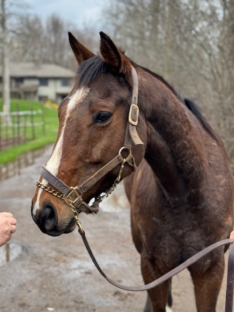
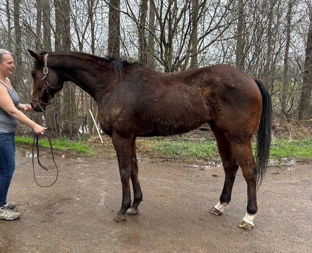
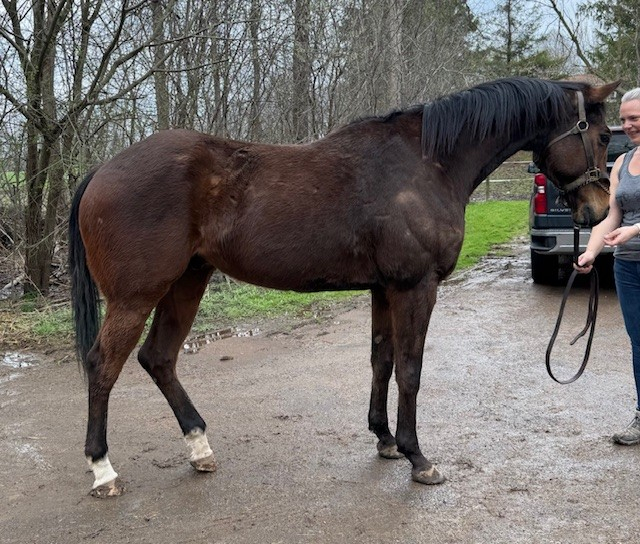
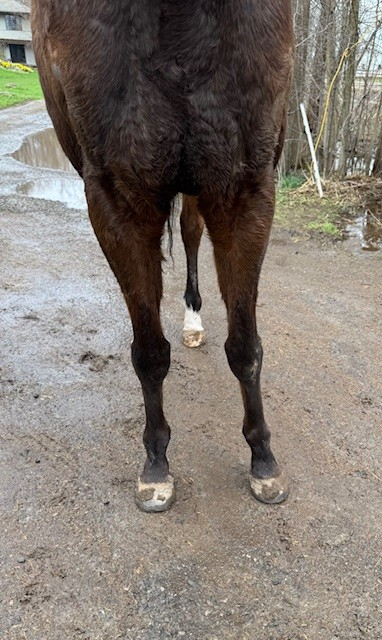
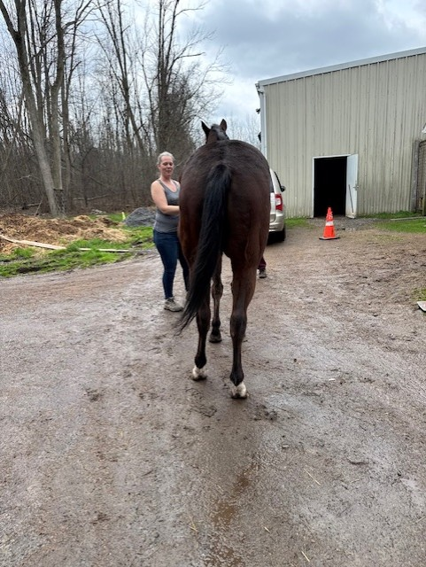

Located at Finger Lakes Race Track, Farmington NY (near Rochester)
Looking for a handsome big gelding described by his doting owner as a "giant puppy dog"? Well then Rolling Palisades is your guy! His owner affectionatley calls him her "little munchkin," and from the photos of them nose to nose snuggling you can see the mutual affection between her and her BIG munchkin. Rolling Palisades had a good career as a racehorse, with 37 starts, 7 wins, 5 seconds, and 4 thirds. Last year, he had a sesamoid injury, and it was completely rehabbed under vet guidance, with stall rest, and then reintroduction to walking, jogging, and increasing work. He is currently being ridden at the track by some of the "pony girls," who report that he is a very nice horse who is good to ride. He has been ridden, including trotting and cantering, both English and Western, and seems equally amenable to both. His owner says he is a very laid back horse who is great to handle – she reports that she can clean his stall with him standing in it without being tied, and he respectfully moves away from where she needs to clean. Rolling Palisades is currently barefoot, and he jogged quietly with just a loose lead attached under his chin, showing a nice flowing walk and an even smooth trot. Despite his laid back demeanor, because he has limited retraining from racing, he would be best for someone with experience restarting OTTBs – but we think he will be a relatively uncomplicated restart. He will probably be best suited for lower level careers, but wow, what an awesome trail and pleasure horse he can be! His owner loves him dearly and wants him to go to a home that will not flip him and will keep her updated on him, and she will sell him with a buy back agreement if he does not work out. Rolling Palisades is by Palace, who is by City Zip, and on his sire side there are great sporting lines such as Blushing Groom and Relaunch/In Reality. His dam is by Yes It's True, from the coveted Raja Baba branch of the Bold Ruler line, and she is out of mare from Wavering Monarch/Buckpasser lines. These are sire lines known for stoutness and durability and much loved in the sport horse world.
Price: $3,000 negotiable to the very best of homes
Located at Finger Lakes Racetrack, Farmington, NY (near Rochester)
Yet another adorable colt that is ready to be a fantastic gelding! The Saxon Story is another young guy that does not realize he has not yet been gelded. He is reported to be fine around fillies and mares, easy to work around, and to have no vices. This laid-back guy was purchased as a 2 year old and was taken downstate but showed little talent there, running far back in his only race. He was given some time off to grow up, and was then brought to Finger Lakes, but is still just too slow to be competitive. He is reported to be sound with no prior injuries. Saxon stood very politely for his photo shoot. He was very calm and enjoyed the attention he received from our volunteers. He was happy to be posed and fawned over. He did get a little excited for his jog video but came down quickly and settled. He displayed a natural over track at the walk and some suspension at the jog. The Saxon Story is by Leofric, a son of Candy Ride. Candy Ride and his sire sones are making quite a mark in the H/J show world, and in eventing. They tend to be great jumpers and good movers. His dam is by Giant Surprise, a son of Giants Causeway, sought after by eventers for their talent in jumping and movement, and she also has Sadler's Wells in her pedigree. While The Saxon Story is too slow to run, we are sure he will make a great show mount that is sure to get you noticed in any arena! Don’t let this young, lightly raced boy pass you by!
Located at Finger Lakes Race Track, Farmington, NY (near Rochester)
Ryochi is an adorable cuddlebug who wants to be anything but a racehorse. Somebody's best friend and partner for horse shows and trail rides, and lots of treats, would be his choice. He is unraced, but he does have two published workouts this year, so he is RRP eligible. Ryochi was orphaned at birth, and his breeder literally brought him into his kitchen to bottle feed him until a nurse mare could be obtained. No wonder Ryochi loves people! The breeder gave him to a young man who is a groom at the track and likes to own a racehorse or two to dote on, to give him a chance to try to see if he could turn Ryochi into a racehorse. But he has been too busy to get Ryochi into consistent training, and the workouts he has had are slow. So he realizes that Ryochi will be better off with someone who has the time to put into him to find what he can most excel at. We were told that Ryochi is quiet enough that he can get ridden and worked one week, then he can sit doing nothing but going on the walking machine for a couple weeks, and then he comes out to be ridden again and goes right along sensibly and politely. Despite his laid back attitude, because Ryochi is a young horse with minimal training, he will be best suited for someone who is experienced at retraining young racehorses or someone who is working with a professional trainer. But we think that he has great potential to become a great horse for a kid or young adult. Ryochi is solid bodied, still has some growing to do since he is only 3, and he is sound with clean legs. For his jog video, he trotted along politely on a loose lead and showed off a very cute fluid toe pointing trot. On another day when we visited the track, we saw Ryochi by himself on the walking machine, happily and quietly walking along without a fuss. Ryochi is sired by Race Day, who is by Tapit out of a More Than Ready mare. His dam is from Danzig, Go For Gin, Damascus lines. There are lots of great sport horse sire lines in this pedigree; in addition to those already mentioned, there is Halo, In Reality, Pulpit, AP Indy, Unbridled's Song, Fappiano.
Located at Finger Lakes Racetrack, Farmington, NY (near Rochester)
This “little sweetheart” is ready to be someone’s best friend! Investment Grade is a kind, sweet girl that soaks up attention. She enjoyed getting pets and peppermints from our volunteers and shoppers. Per her connections, she is easy to work around and has no stable vices. Her contact ponies her for her races and reports that she is always a very good girl and always does as she’s told. She’s reported to be sound with no know injuries.
Investment Grade was happy to be posed while we conducted her photo shoot. She jogged politely with a loose lead clipped under her halter. No chain needed for her! She demonstrated a natural over track and swing to her walk. Her jog was steady and flat-kneed. This girl is just all around adorable!
Investment Grade is by Central Banker, who is quickly becoming a favorite for their fantastic brains and movement. She’s out of a Dixie Union Mare, who’s known for their athleticism. Investment Grade is sure to be an excellent partner in just about any discipline!
Located at Finger Lakes Race Track, Farmington, NY (near Rochester)
If you are looking for an A Circuit show hunter prospect or upper-level eventing prospect, then this horse is for you! Gem, as he is known around his barn, is indeed a gem! A trainer favorite, she raved about what a good guy her beloved gem is. He's such a really good boy, she kept saying — great to handle, to ride or to pony on the track, to trailer. She said he has no vices, is an easy keeper, has been sound with no issues the entire time she has had him, and that "he loves you to love on him and give him treats." Gem has been a successful racer and steady check producer in the years she has had him, but since he won a race earlier this year and has had to face tougher competition, he's not finding the same racing success, so she knows that it is a good time to let him move on to a new career. Our volunteers drooled over his gorgeous good looks, balanced conformation with a great shoulder and topline. The photos do not do him justice, since we photographed him just a couple days before he was entered to race, and in an excess of caution they put a lip chain on him, while saying he didn't really need it. Then, when he jogged for his video we all loved him even more, with both our show hunter volunteer and our dressage volunteer equally wowed. He showed off a lovely fluid trot, striding out with great reach and good hind end engagement. In addition to his good looks and beautiful movement, Gem offers an ideal sport horse pedigree. His sire Gemologist is by Tiznow. His dam, Cape Cod Carol, is from the Unbridled's Song sire line and her dam is from the Valid Appeal/In Reality sire line.
Price: $5,000 negotiable
Contact: Dana Saul (315) 871-9383 (text preferred)
Tall, dark, and handsome? Check, check, check. Mudville Nine will check all those boxes and more. This very sweet guy is reported to be very easy to work around and a pleasure to have in the barn. The only not so perfect barn mannerism is that he gives nasty faces when he has his grain. His connections believe that this may be because he was so low in the pecking order while being turned out over the winter.
Mudville Nine is just as straight forward to ride as he is on the ground. Never offers a buck, rear, or bolt. He is just a sweet boy that likes to get down to business. He did come back from his last race a bit sore in his knee. Rads were taken and there are chips and arthritis started in the upper joint. These are available to serious parties. Because of this, Mudville is best suited to low level pursuits.
Despite the jewelry in Mudville’s knee and being currently barefoot behind, he demonstrated a natural suspension at the jog and natural over track at the walk. Mudville Nine is by Hard Spun, who is sought after for athletic ability and is out of an Elusive Quality Mare, sought after for trainability and their good brains. Here’s your chance
We didn't even have to do a write up on this gallant war horse, since one of our volunteers fell inlove and brought him home!





SHEER FINANCE, 2022, 15.3h+, bay gelding
If sweet, cute, and bay are your check boxes, then look no further than Sheer Finance! This young gentleman is a very sweet and in your pocket type of guy. He is reported to be easy to work around in the barn with no known vices. He is very good in turnout and even easier around the farm than at the track. He is reported to be sound with no previous injuries, just far too slow to be a racehorse. He is unraced, but does have one published work, making him eligible for the RRP Thoroughbred Makeover!
Sheer Finance is reported to be good to ride, very levelheaded, with no funny business. He proved this as cars went by while we were doing his photo shoot. While all the horses in the barn were amped up because of lunch time and an incoming storm, this guy stood perfectly to be photographed. While he needed some help posing, he didn’t mind his handler picking his legs up to put them exactly where the humans wanted them.
While Sheer Finance was a bit tender on a missing front shoe, he still demonstrated his level head and good manners, standing perfectly while his handler responded to an urgent message. Our volunteers could see the potential with a flat kneed trot and some natural suspension. Sheer Finance is by favorite NY stallion, Central Banker, known for offspring with very good brains, trainability, and movement, and is out of a mare by the coveted Frost Giant, known for throwing athleticism and movement. This blank slate of a typical bay gelding will fit in perfectly with just about any job!
Ixodes stunned our volunteers with her unique coloring and delicate build immediately upon exiting the barn! While technically a dark bay, she has hints of red throughout. This petite lady may seem grumpy in her stall but cheers up the second she comes out. While offering some “mare stare”, she still never does anything naughty in her stall, and is reported to be vice free. And like any true lady, telling her she’s pretty also changes her attitude!
Ixodes had just raced less than a week before we photographed her, had only been walking since, and then the entire barn started grumbling for their lunch, so she was understandably distracted for her photo session. Still show showed off her big shoulder and lovely neck attachment. She enjoyed the attention of the scratches from the volunteers. She is reported good to ride, with no funny business, and despite the ruckus going on around her, she was able to demonstrate her natural over track at the walk, and her floaty, toe-pointing trot.
Ixodes is by War Dancer, son of War Front, known for the their jumping ability and out of a Skip Away mare. Don’t let this unique, pretty girl pass you by!
Never has a horse been more the opposite of her name than the truly angelic Devilly! Her connections, who have had her since she was 2, report that she is absolutely perfect to handle and work around, with no known vices. She loves attention, grooming in her stall, and peppermints. She is great in turnout and has been with groups of other horses.
Devilly is typically very laid back to handle and ride. Her owner/handler, who is a self-proclaimed chicken when it comes to riding the racehorses, has ridden Devilly herself, and reports that she is a very good girl who never does anything naughty. She was uncharacteristically up for her jog video, definitely responding to the barn energy going on behind her, but still showed off her natural suspension and what one volunteer deemed “cat-like grace”. Devilly was a volunteer favorite when we took a listing at the end of last meet, and that sure hasn’t changed this year!
Devilly is by Noble Mission, son of the great Galileo, with offspring known for their jumping talent and level heads. She is out of an Indian Charlie mare, whose offspring are coveted for their amateur-friendly brains and trainability. Devilly would look great in any arena- don’t let this angel pass. You by!
Tall, dark, and handsome, Her Sugar Baby sure is a dreamy option! Sugar had just stepped off of a near 10-hour trailer ride before his photo shoot, but that didn’t stop this big 3 year old from standing like a perfect gentleman! While his current connection doesn’t know a ton about him, she could tell us without a doubt that he is perfect to load and unload from the trailer, has no vices, and has a larger than life personality. His current connection brought him from a trusted trainer in Saratoga, who’s always been known for her quality, well behaved horses. Sugar is certainly no exception!
This growing boy needs some groceries, but is happily taking on the challenge, as he does love his grain. He is easy to work around in the barn and will beg for attention. While his connection was telling us about him, he offered smooches and took the racing program right from her hands, discarding it on the ground, so that he could have everyone’s full attention.
Sugar was a bit up for his jog video as he is currently only walking and eating, but he remained respectful of his handler, demonstrated natural suspension, and a toe-pointing, flat-kneed jog. Sugar is by Maclean’s Music, who is by Distorted Humor, known for their offspring with excellent movement and brains. He is out of a Malibu Moon mare, who he surely gets his fun personality from! This young, large, lightly raced guy checks all the boxes! Be sure not to miss Her Sugar Baby!
If an absolutely adorable, young, unraced blank slate is what you are looking for, then Stonecoldbrockley is just the guy for you! There is nothing “stone cold” about this sweet guy who ate up the attention from his handler and our volunteers. He was very sweet in his stall and on the ground and is reported to have no vices. And as it turns out, he doesn’t love life at the track and gets even sweeter on the farm. While small now, he is only 2 and will likely grow a bit. But what nice proportions for a 2 year old!
Crooked is this sweet boy’s nickname and it comes from a malformed front leg. While he has been reported sound, this combined with a bad case of the slows, has lead his connections to make the decision to allow him to find a more suitable career. Crooked has not raced and has no published works, so he truly is ready to go in any direction!
Crooked demonstrated his lack of forward as it took his handler dragging him and our volunteers clapping at him to get him to jog. Once he did, he politely trotted next to his handler, and showed off a flat-kneed, toe-pointing trot. Crooked is y Bustin Stones, known for smart offspring that are often amateur friendly. He is out of a J P’s Gusto mare. Crooked may not appear perfect on paper, but let him be the perfect pony for you!
Dr Blarney is the very essence of racing royalty, earning over $780,000 in his distinguished career, but it’s time for this king to find his next career! This huge hunk of a horse is very kind and reasonable. He is reported to have no vices in the stall and is wonderful at home on the farm. During his downtime he even lives outside 24/7.
He is reported to be sound with no previous injuries. He is all business under saddle, and because of this, his connections had hoped to make him a pony horse to keep him around, but unfortunately, he doesn’t love leading other horses. Despite his distaste for ponying, he is a straightforward ride with no funny business.
Dr Blarney enjoyed his photo session, getting the attention he deserves. Our volunteers admired his strong shoulder and gorgeous neck. Our photos cannot show off the very large presence this guy has! For his jog video, he was uncharacteristically hot-to-trot, and ready to show off his moves- and what moves they were! His jog just floated over the pavement, and this is all while he is barefoot behind!
Dr Blarney is by Dublin, a highly sought-after sire for his athletic and trainable offspring. He is out of a Capote mare. No surprise that this king also totes royal blood! Dr Blarney is extremely well-loved, and his connections will be very picky where he is placed. Please bring references. But they are also willing to get creative to get him into the most perfect home.
Attention grey lovers- In the Blue is not only a coveted grey, but also sweet, levelheaded, and an all-around easy-going guy! His handler ponies him for his races and she reported that he is very good to pony, easy, and knows his job. He is reported to have no vices in his stall and easy to work around, though at the track, he can sometimes offer a grumpy face. He is all bark though, and no bite. He is straightforward to ride and doesn’t offer any funny business. He is reported to be sound with no previous injuries.
He posed perfectly for his photo shoot, allowing our volunteers to admire his dashing good looks. For his jog video he allowed his handler to adjust his jog from a bit quick to slightly slower to show off his stride. He was a perfect gentleman, doing exactly as asked. He is by the popular sire Into Mischief, who’s offspring are known for their jumping ability and athleticism. He is out of a Lookin at Lucky mare, who is of Smart Strike lines, known for their great brains and trainability! All in all, Blue is the whole package and we could see him excelling in just about any arena!
Mortgage Rate is a tall, hunk of a horse that is ready to be your next big eventer! This big boy is as sweet as he is easy on the eyes. He’s reported to have no vices and easy to work around in the barn. He’s pretty laid back on the farm. Under saddle he’s pretty strong, and because of this, his size, and age, his connections feel he would be best with an experienced rider.
Mortgage Rate is reported to be sound and to have no previous injuries. He has poultice on his legs as he was ready to race the next day. After a successful year last year, with 4 wins, he just isn’t showing any interest in racing. He posed like a champion for his photo shoot, and didn’t even mind while his trainer’s daughters moved legs and head (and teased each other) to be sure he was set up just right. For his video, he demonstrated a natural over track at the walk. He showed off a flat-kneed, toe-pointy jog, despite feeling lazy from the heat.
Mortgage Rate is by the highly desired NY sire, Central Banker, known for offspring that have fantastic brains and beautiful movement. He is out of a Violence mare, who is also known for level-headed babies. Mortgage Rate is the whole package and we can see him succeeding in just about any arena!
When you ask a horse’s connections to describe their horse and they cannot come up with enough ways to say that he is perfect, you know you have a good one, and Production Credit is just that horse! He is a horse of many names, Pro Pro, PC, Pro, Houdini (there’s a joke here), and more, but by any name, this guy is a barn favorite, and we can see why. He is very sweet and cuddly in his stall, and is reported to have no vices. He’s very easy to have on the farm, turns out well, and is low man in the herd. However, if you leave one of his snaps accidentally undone on his webbings, he may just sneak out for a midday walk. But don’t worry, this kiddo is such a good boy, even the trainer’s grandkids could bring him back.
Pro is reported to be sound with no previous injuries. No surprise, he’s reported to be very good to ride, all business, and very straightforward. One of our volunteers has followed his entire race career and can confirm that this guy knows his job and is very well behaved on the track and in the paddock. He stood absolutely foot perfect for his photo shoot, basking in the compliments and pats from our volunteers. He was definitely feeling the oppressive heat of the day for his video but still demonstrated his natural lift and suspension, as well as pointy toes.
Production Credit is another by the favorite sire, Central Banker, known for these level headed babies, and is out of an E Dubai mare, another known for one with very amateur friendly offspring. While he may be a bit on the smaller size, don’t let that concern you- he’s as wide as he is tall, and will surely take up a lot of leg. This perfect angel is sure to be a hit in any arena, and the best friend of whomever is lucky enough to get him home!
When asked to describe Father Tim, his connections state that they “wished they could find something wrong with him other than being slow” because he’s so nice to be around, they’d love to keep him in the barn! “Hoppy”, as he is known around the barn, is so sweet, kind, and easy to work with that his connections feel he should belong to a good riding child. He loves to be loved on, has no vices, and is as laid back as they come. He proved this while we took information for him and he munched on grass quietly on a very loose lead.
Under saddle, Hoppy doesn’t offer a single bad habit. He’s very light in the hand and goes in a D bit. One of his exercise riders has been taking him to the track to keep him doing something, and he will stand and watch others train, go gallop, then come back and stand quietly again. This guy is bred for synthetic footing, doesn’t love the surface at Finger Lakes, and his owners don’t want to ship him to run, so his connections feel it’s best to find Hoppy a new career.
He greatly enjoyed posing and being admired for his photo shoot, and boy was he one to be admired, with his strong shoulder and dark dappled coat! He jogged politely for his video on a loose lead, showing off a naturally floaty gait, even while barefoot behind. Hoppy is by Tapwrit, a son of the highly desired Tapit, known for their athleticism and jumping ability. He is out of an Ocean Terrace mare. Our volunteer who does a lot of retraining and reselling thinks this one would really excel in the hunter ring, but he’s likely to get you noticed in just about any arena! Don’t miss Father Tim, he’s the whole package!
This “little sweetheart” is ready to be someone’s best friend! Investment Grade is a kind, sweet girl that soaks up attention. She enjoyed getting pets and peppermints from our volunteers and shoppers. Per her connections, she is easy to work around and has no stable vices. We were able to speak to her pony rider, and she reports that Investment Grade is always a very good girl and always does as she’s told. She’s reported to be sound with no know injuries.
Investment Grade was happy to be posed while we conducted her photo shoot. Please note she is only wrapped in her photos as our volunteers got to her a bit later than normal. She jogged politely with a loose lead. She demonstrated a natural over track and swing to her walk. Her jog was steady and flat-kneed. This girl is just all around adorable!
Investment Grade is by Central Banker, who is quickly becoming a favorite for their fantastic brains and movement. She’s out of a Dixie Union Mare, who’s known for their athleticism. Investment Grade is sure to be an excellent partner in just about any discipline!
If young, handsome, and lightly raced are on your checklist, then you’ll definitely want to check out Frontal Vision! His connections could not say enough about how sweet and easy this guy was to be around. He is reported to have no vices, a pleasure to have in the barn, and even easier at home on the farm.
Frontal Vision is a straightforward ride with no funny business. He is feeling a bit up now as he has not been doing anything recently. He does have knee chips in the right front upper joint. Rads are available to interested parties. He is also currently barefoot and was a bit tender for our jog video. He did show off his friendly personality for his photo shoot and enjoyed being gushed over and admired.
Frontal Vision is by Summer Front who is by War Front and out of an El Prado mare, both of whom are revered for their offspring being athletic and jumping ability. His is out of a City Zip who’s known for throwing babies that are very trainable and good minded. Frontal Vision is offered at a bargain price as his connections are most concerned that this absolute doll of a horse finds the best possible new home. Don’t miss out on this young, handsome, sweet boy!
If you’re looking for a kind, sweet, tall drink of water, then look no farther than Fly by Night! This very handsome boy is truly enjoying his time away from the track. His trainer’s children lead him to and from his turnout. He hasn’t yet been with friends, but he is as happy and easy going as they come, so his connections have no reason to believe he won’t do great with friends. He is reported to have no vices and to be truly “excellent” to be around.
Night is reported to have no previous injuries and to be sound. He is currently barefoot as someone had committed to him, requested they be removed, then for personal reasons couldn’t follow through with the purchase. Because of this, his feet do need some attention, but was still able to demonstrate a quiet, toe-pointy jog, even on gravel! Night ate up the attention of our volunteers as they gushed over his dreamy good looks and loveable personality. There actually is a small star on his forehead, but it’s covered by all that forelock!
Fly by Night is by Air Force Blue, who is by War Front and out of a Maria’s Mon mare. These offspring are known for amateur friendly brains, thick builds, and athletic ability. He is out of a Scatt Daddy and Mr. Greely mare, also known for fantastic brains and jumping ability. Fly by Night’s connections agree that he will be very amateur friendly and think he could succeed in just about any job away from the track! Don’t miss this young, big, sweet guy!
This handsome horse is everything that people say they are looking for: young, big, good bone, clean legs, sound, mellow with a friendly personality, and a great sport horse pedigree. A homebred of his track owner, he has been with his track trainer since he was a yearling, so you can get his entire history from her. She reports that he has never had any injuries or issues, and that he loves farm life and turns out great in a mixed herd, where he is middle of the pack. She says he is a cuddly sweetheart, and we saw this for ourselves as he begged for her attention and then licked her face as she stroked his! He is a peppermint hound, but she says that carrots are not to his liking. Ranger Blue showed nice even movement and a big walk for his video, as he jogged politely on a loose lead. After starting his racing career with promise, winning at the maiden special weight level and running second in a stakes race, he has not returned to that early racing success, so it is time to let him find a new career more to his liking. With his pedigree, strong shoulder and hip, and high neck set, we can see eventing or other sport horse disciplines in his future. He is by Micromanage, who is by Medaglia D'Oro from the Sadler's Wells sire line — one of the most coveted sire lines for sport horse disciplines. His dam is from Skip Trial/Damascus, Halo and Northern Dancer lines. Micromanage has sired several horses who have become successful eventers, and he was retired from stud a couple of years ago and has become an ammy friendly all around sport horse who loves trail rides and has even foxhunted. We can see Ranger Blue following I his father's footsteps.
If perfect and pint sized is on your checklist, then you need to check out Sweet Lilac! This petite lady’s connections state that she is easy to work with, nice to have in the barn, and has no vices. Her trainer states she never does anything wrong and is just all around easy, and that easy-going manner is likely what makes her not a good candidate for racing but will make someone a lovely horse for a different career.
Under saddle, Sweetie is reported to be a good, straight forward ride. She is reported to be sound with no previous injuries. She was a bit up for her jog video as she hasn’t been doing anything other than walking, but in work, she’s reported to be more laid back. She remained respectful of her handler and showed off her fancy, toe-pointy trot. Sweet Lilac is by Mr. Monomoy, who is by Palice Malice, son of Curlin known for athleticism and personality. She also has Henny Hughes on the bottom, and the horses our volunteers have seen by Henny Hughes have been very amateur friendly! She is out of a Pure Prize mare, who has Storm Cat lines. This pocket-sized princess may be exactly what you need in your barn!
If you’re looking for a big, gorgeous guy with an even bigger personality, then Guaco is the guy for you! Guaco is as thick as he is tall and is just as large of a sweetheart. He’s reported to have novices and is just an absolute pleasure to have in the barn. At the farm, he is good in turnout and loves having the company of the other horses. He’s reported to be good to trailer and is just easy and relaxed about everything. Our volunteers saw proof of this when trying to photograph him, and he just kept resting one foot or another.
Guaco is reported to be sound but does have a big osselet on his front right. He has raced with this and, per his connections, it hasn’t caused him any issue. They do have rads available to interested parties, but they are older. His connections have decided Guaco has paid his dues, and is ready to move on to a new career. He is currently barefoot, but still demonstrated a floaty, flat-kneed jog.
Guaco is by Maclean’s Music, a son of Distorted Humor, who is known for having offspring that are level-headed and kind. He is out of a Devon Lane mare, that has Storm Cat and Cozzene lines, known for athleticism and jumping ability. You won’t want to miss this big, sweet, GREY gelding who would love to fit into just about anyone’s program!
Our volunteers were struck by the beauty of Big Hazel the second she walked out of her shed row! This gorgeous girl is tall and thick and is reported to be just as lovely to work around as she is to look at. She’s reported to have no vices. Hazel, however, and does have her moments where she prefers to be left to herself but is always polite and simply moves away from the people. She is reported to have no vices.
Hazel is reported to be very good to ride. She seeks contact from her rider and enjoys being “put together”. Hazel is also accustomed to being mounted from a block, chair, gate or really anything. She is reported to be sound with no previous injuries. Hazel’s connections stated she was a bit more up than normal as she hadn’t done anything the previous week. She still remained very respectful of her handler and displayed a natural over track and swing at the walk, and a floaty, toe-pointing jog.
Hazel is by the highly sought-after Big Brown, known for athletic, amateur friendly offspring. She is out of a Bluegrass Cat mare with Storm Cat and Arch lines, which will often are known for athleticism and gorgeous movement. Don’t miss this tall, sweet mare that is sure to get you noticed in any arena!
If tall, dark, handsome, and super slow checks your boxes, then My Kinda Crazy may just be your kinda crazy, too! This guy is reported to be vice free, super sweet, easy to handle, and nice to have in the barn. His connections say he doesn’t really ever do anything wrong and is easy to get along with. His connections state that “chill dude” is the best way to describe this youngster, and he certainly proved that to be true during his photo shoot. Like the other photographed in the day, he was so relaxed that he kept resting one foot or another, happy to be out of his stall and admired.
My Kinda Crazy is lightly raced and was reported to be “too slow to get hurt”, and thus is injury free. Despite not having run since July 28, this guy was just as laid back as can be. For his jog video he demonstrated a lofty, toe-pointing jog. My Kinda Crazy is by Leofric, a son of the coveted Candy Ride, known for producing solid offspring with great brains and movement. He is out of a Posse mare, another sire known for producing smart, levelheaded babies. Don’t miss out on My Kinda Crazy who is anything but crazy!
We first observed this sweet, friendly mare relaxing in her stall and were immediately struck by the expansive width of her chest. She displayed a polite and workmanlike attitude, absolutely no stereo-typical chestnut mare attitude; instead, she was a complete and businesslike lady! She led quietly to the wash stall and stood patiently as the poultice was hosed off her legs. On such a dreary and rainy day, her photos don’t truly do her justice. She’s a thick, sturdy, solid mare. A true war horse with 66 starts, she’s been a consistent performer, demonstrating her durability. Her connections tell us that she is a “strong, happy filly who trains well and likes to work”. She seems to enjoy having a job and displayed a professional attitude during her photos session. We were told that she has no stable vices and is pleasant to work around, which is exactly what we saw. She was adorable when we brought out the peppermints- she daintily nibbled one and politely asked for more! We did note a soft swelling above her left knee- it was cold to the touch and did not seem to bother her when it was palpated; we were told that she has had that for a long time, run on it, and it has never bothered her or affected her soundness. She was agreeable, relaxed, and attentive during her jog video moving responsively to her handler.
She has been a solid performer for her connections and although they feel she is still happy, as she is getting older, they feel it is important to find her a good home and not return her to racing again next year. We’ve loved this hard-working mare since we first met her last year- she’s a durable war horse who has paid her dues and is very deserving of another career where she can be blossom and be successful. She will work hard for you in whatever you may ask her to do! Remoane is by Karakontie out of a Hard Spun mare.
UPDATE:
Remoane chalked up another win to fittingly cap off her successful racing career with a record of 68: 7-14-17. Her connections, who’ve had her for four years, are motivated to do right by her and find her the perfect home, but if they had their own breeding farm- they’d be keeping her! Her sire Karakontie is a grass-racing star who has won Grade I races in both Europe and the US (including the Breeder’s cup turf mile) and at stud, went on to sire many top stakes horses. Karakontie is by Bernstein, a popular sport horse sire and out of a Sunday Silence mare (Sunday Silence stood in Japan, so it is a rare opportunity to be able to get those bloodlines). Remoane’s dam is by Hardspun (Danzig lines). Her 2nd dam is a stakes winner by Speightstown and her 3rd dam is a multiple stakes winner. This classy mare has the brains, build, work ethic, and pedigree to excel as a sport horse, or a sport / race broodmare. Or both! And she’ll be one that you’ll enjoy seeing poke her head over the stall door every morning. A favorite on the track backside and with the volunteers, she’s one to see in person her photos on a dreary, drizzly day don’t capture how lovely she truly is. Reduced to $1,500 per trainer’s post in comments below.
This cute, friendly gelding was a complete ham and the definition of the “in your pocket” type. We really liked his solid, balanced, and nicely proportioned body. We were told that he is “nice and easy” to work with and ride, without any vices. We observed a happy and friendly horse who was quite chill and very agreeable during his photos and jog video and seemed to enjoy the attention. We noticed loose and relaxed movement at the walk and watched him jog on a loose lead, attentive to his handler, with flowing movement demonstrating some spring and loft. We were told that he’s “just not interested in running”. He does however have an entry for 08/25 if you’d like to see him run. But why not bring the trailer along and take him home afterwards to start his new life as a pampered show pony? Paul is by Street Sense out of a Grand Slam mare with Gone West, Coxs Ridge and Relaunch also appearing in his pedigree.
This son of Central Banker was described to us as being “always a happy horse”. He’s said to be very nice in his stall and easy to handle with no vices. We observed a friendly and personable horse who, while being completely professional, also genuinely seemed to enjoy interacting with people (such as stretching in attempt to get some “nose boops” from our volunteer as she was photographing). He stood quietly and allowed us to position his feet. We loved his sweet face and “fabio-like” forelock. He has a nice long shoulder and is deep through his body. He displayed an overstep at the walk and cute movement at the jog. We especially like how he wagged his tongue at the end of his video as if he knew he had been a good boy. Although he’s had a respectable career as a racehorse, he has not run as well this year and is yet to be on the board. His connections feel that he doesn’t have as much try as last year and is less interested in racing which is why they are looking to move him along to a new career before the end of the meet. Central Love is by Central Banker out of a Corinthian mare with Pulpit, Halo, and Go for Gin also appearing in his pedigree.
My Executive Sweet is…. Sweet. She’s also smart, and another lovely “un-chestnut-mare, chestnut mare”. We were told that this good girl is “the smartest horse I’ve ever worked with” and that she is a sweetheart who is easy to ride, a pleasure to handle and good to work around. She’s a pretty girl with a lovely arched neck. In her video, even with a missing RF and no hind shoes, we observed classic daisy cutter /flat kneed movement. At the farm, she enjoys turnout and is good turned out in a group of horses. She leads quietly, and was even handled by a 9-year-old walking back and forth to turnout at the farm. She’s lightly raced with only two starts. She had surgery on her left knee for a chip in the upper joint. We’re told that it wasn’t required and it never bothered her (and hasn’t since), but that the owner opted to do so in order to optimize long term options. She was cleared to return to training and has an excellent prognosis for pretty much any disciple. Her trainer will make vet records available to seriously interested parties. But, as often happens after a little time off, Executive Sweet is just not as interested in running as she once was. Currently, she’s had two months off- as her owner debated getting a foal from this well-bred mare, but has since decided that the timing (and upkeep expense in the meantime) does not justify that in their current situation. So, now they’re motivated to get her placed ASAP! Meanwhile, Executive Sweet is “bored in jail” and wants a job… just not a racing one. Her trainer believes that she is smart and agreeable and would excel in any direction you wish to go. My Executive Sweet is by Micromanage (Medaglia D’Oro) out of a Stroll (Pulpit) mare.
When we first met Pisgah, we thought maybe we wouldn’t have to do a write-up for her as our newest volunteer was immediately smitten! We heard that this big, friendly filly is quiet in her stall, good to groom, has no vices, and “likes carrots”. And that’s what we observed. Her trainer mentioned that her only quirk is sometimes she seems to feel more comfortable with a nice wide turn to enter through her stall door. In person, she was stunning with a very pretty, feminine head. Tall and solid, with a long shoulder, deep body, and powerful hindquarters, the overall impression is that of a big, strong, athletic filly. Only three, it looks like she’s in a growth spurt and she still has some growing to do for her front end to catch up. She was very well behaved during her jog video and showed athletic and springy movement. She has only four starts, but is yet to be a winner. We were told that there aren’t any physical issues, she’s “just slow”. As a result, even after a recent second place finish, her connections have decided not to continue racing her as, in their opinion, Pisgah clearly wants to do something else. This big, young, lightly raced filly is a blank canvas that we could imagine excelling in many different disciplines. Turn her out for a bit, let her finish growing, and next year you’ll have a gorgeous young prospect to start! She is also an exceptional broodmare prospect for racing or sport horse breeding. She is by Blame, out of a Bernardi mare. These are two of the best brrodmare sires, whose daughters are consistently producing top runners. And her dam is a half sister to three graded stakes winners and to a producer of graded stakes winners. Her pedigree is also replete with top sport horse sire lines. Blame is from the Arch/Roberto line, with a dam by Seeking the Gold. Pisgah Pike's dam line includes Fappiano and Caro.
QUIET HORIZON, 2018, 16.2+ h., bay mare. Located at the Finger Lakes Race Track in Farmington, NY (near Rochester, NY).
This was the perfect listing to start off our day and set the tone for posting of some really nice horses! We enjoyed meeting this super friendly, curious girl in her stall when we were a few minutes ahead of her owner/ trainer for our scheduled appointment. He said, “I should have just told you to grab a lead rope and take her out yourself”. And you know what? He was exactly right! Because she is a total sweetheart gem of a mare with who we would have had no issues in doing so. But then we would have missed how adorably sweet, snuggly, and kissy she was with her trainer (which we always love seeing!). If you are looking for an affectionate girl who craves attention and wants to bond with her person, then she is definitely it! She was described to us as “sound, but not fast”. This year, she has yet to be on the boards in six starts. We were told that she was originally claimed as a 3-y/o to be a pet / companion for another horse in his barn. But she ended up staying because she is such a doll. Physically, she is stocky and well balanced, with good proportions and powerful hindquarters. Although she is slightly pigeon toed, we’re told that is has never been an issue and she has never struck herself. We observed a cute, springy, fluid, and relaxed jog in which she was responsive and exceptionally polite to her handler. We love how she stopped and looked off into the distance- a totally protective and vigilant mare! We were told that she is sound with no vices, which is why her owner has kept her around so long, “she’s like a pet”. Her owner/ trainer says that she turns out 24/7 every winter and comes back “fatter, stronger, and bigger”. She ran the Wednesday before we took her Monday photos / listing but we did not detect any issues of body soreness; instead we observed a happy, much loved, well cared for, and well-adjusted mare. Her owner / trainer is working through some personal health issues at the moment so he is scaling back on his herd. As this favorite mare is getting a bit older, he’d love to see her happily well-placed in her next home / job. Quiet Horizon is by/Mizzen Mist out of a Langfuhr mare, with Cozzene, Ribot, and Tom Fool on her sire side and Danzig on her dam side. What can we say? We’re totally obsessed with this total sweetheart of a mare! A volunteer favorite!
This 3-year-old is essentially a blank slate who, after four starts, has yet to break his maiden. We were told that there is nothing physically wrong with him, but that he just “doesn’t want to run”. Racing’s loss is your gain as he could instead be the perfect sport horse for you! He’s described to us as sound and a “real lover just not a great runner”. His trainer said that he is a total “in your lap” type and a complete lover. And that’s exactly what we observed! He’s said to be fine to ride with no vices (doesn’t crib, bite, or kick). And as an added bonus that many of us appreciate, is that he is “clean is his stall” (OMG- you have to love those tidy horses when YOU are the one who is on muck duty!). On the farm, he reported to be good with other horses in turn-out. We loved his sweet face and well put together, athletic build. But his jog video totally wowed us- a beautiful mover with a nice big walk overstep and such a light, fluid jog! With such lovely movement, we could see him as either an event or dressage or hunter prospect. Or an all-rounder because if you like dabbling in a bit of everything- this guy seems pretty agreeable! And at this price, he’s a bargain for such a young, very lightly raced, good-looking gelding. Desert Power is by Higher Power out of an Utopia mare. He has Medaglia D’Oro (El Prado / Sadler Wells lines) on his sire side and Storm Cat on his dam side.
Dark and dappled describes this lovely filly who has had one lackluster start as a three-year old (earning a whopping $326). She’s extremely pretty, with a beautiful face and slightly dished profile. We loved her beautiful, arched neck and very elegant, feminine appearance! She’s described as a sound sweetheart whose only vice is that she is a confirmed “treat hound”. We’re told that she doesn’t have any other issues, just that her owner and trainer feel that as she doesn’t have tons of potential as a racehorse and as they suspect that she won’t hold up to long term racing on the hard FL dirt track to try and grind it out; they’d like to do right by her now and responsibly rehome her while she is sound and happy with unlimited potential as a sport horse. Which is awesome news for you! She’s reported to be good in her stall, with no vices but generally, a friendly, “in-your-pocket” kind of horse. And that’s exactly what we observed. Although she’s young and fit, she’s described as being nice to ride. Anyone experienced with OTTB reschooling who is looking for an affectionate, young filly should find her to be a delightful restart. In her jog video, we observed elegant, fluid, floaty movement even though she was missing a hind shoe. We could see her excelling in many disciplines- basically, in whatever direction you might choose to go! Cocoa Beware has good breeding for sport; she is by Leofric (Candy Ride) with Unbridled lineage on her sire side and is out of a Freud mare. Be prepared to come with references for this one as her contacts will be very selective in choosing her next home.
This elegant and stately gray mare displayed a sweet personality. But we were surprised when she politely refused our offer of peppermints- so admittedly, she’ll have to be re-trained for that! As of right now, she appear to be a strictly carrots kind of girl. We thought she had a beautiful, regal face and we liked the sturdy frame to her build. She also has a very pretty, feminine arch to her neck. We think she will be even more striking as she fills out after being race fit. After all, an attractive, spotlessly turned-out gray horse is always an attention grabber in any show ring! We were told that she is sound and has not had any injuries or vices. She’s said to be good to work around, and “nice to ride with no funny business on the track”. In her video, she jogged respectfully next to her handler and showed lovely balanced movement. Essentially, she’s a proper lady who knows her job and is always ready and cooperative about doing it. This year, in her four starts she has yet to hit the board so she is letting her trainer know that she would prefer to do someting other than racing. As her trainer / owner is scaling down his stable, he feels it is a good time for this young, five-year-old mare to move on to another career where she can excel and thinks she will be happy in learning a new job. Cause I’m Elegant is by Creative Cause (by Giant’s Causeway- a noted sport horse sire) out of an AP Indy mare. Popular sport horse sires such as Roberto, Caro, and Relaunch pepper her pedigree; she is a well-bred girl for sport as well as for racing.
This lovely dappled girl is described by her connections as an “easy-going filly” who is a “sweetheart, not a runner” and a “doll that anyone at the track can ride”. That’s pretty much what we saw. She stood quietly as she was brought outside and her handler ran a brush over her pretty coat. We observed a sweet, relaxed, attentive, and ladylike mare. Her connections tell us that she doesn’t have any vices or injuries. But after a solid performance last year (including three wins), she has yet to get on the boards in her four starts in 2025; she just doesn’t seem have the same try. She is a striking and gorgeous girl, a dark bay color with just a touch of distinctive chrome. Slightly slenderer in build, leggy and elegant; she stood quietly remaining alert and expressive while we admired her pretty features. And although she was clearly happy to get moving, she remained attentive to her handler during her video, responding to his request to slow down on her second jog pass to display some pretty and springy movement. And we can vouch that she is fully peppermint trained! If you are looking for a sweet, pretty, affectionate mare then Jayla should be added to your list! Jayla is by Tourist (Tiznow) and out of a Giant’s Causeway mare. She has many notable sport sire lines appearing in her pedigree including Gone West, Hail to Reason / Halo, In Reality / Relaunch and Unbridled/ Fappiano.
When a horse’s race connections describe a horse as “perfect” and “just a really cool dude”, you know you’re going to meet a nice one, and Kingdom on Paws is no exception! His handler even stated he would love to keep him and make him a pony as he’s so easy-going and laid-back. Paws is reported to be easy to work around and with and is reported to have no vices.
Paws is reported to be sound with no past injuries. For his video, Paws displayed a natural over-track at the walk. Paws showed off his cool demeanor at the jog, with a flat-kneed, lofty, toe-pointy trot.
Kingdom of Paws is by Animal Kingdom, who’s offspring are known for being very level-headed and athletic. He is out of a Bernardini mare, who’s sought after for movement and jumping ability, and has Tiznow lines as well. With his dappled, dashing good looks, and calm and cool demeaner, Paws is sure to make an excellent partner!
His connections jokingly called him “our little man” as he was being led out. But this very dark and handsome boy is one big, gorgeous, solid horse… with regal movie star good looks! Just a three-year-old with 7 lifetime starts (in which he’s failed to get on the boards); his trainer told us “he’s as sound as a dollar, but just doesn’t want to be a racehorse”. We were told that he’s meant to be a grass horse and doesn’t like racing on the hard dirt track at Finger Lakes. This “good boy” is said to be great in his stall, with no vices, loves attention from women (we can attest to that!), and that he is generally super sweet. As he has only been walking the past few days, his connections thought, being so young, he might be a bit more ‘up’ than usual. But he walked out quietly- that is until a very loud bang came from the shedrow right behind him (a horse walking in the shedrow must have double-barrel kicked the wall) loud enough that ALL of us jumped. And then there were repeated instances of loud, sudden noises (from both vehicles and horses) all around him during the early part of our session. This made him (understandably) tense and distracted during photos, but he respectfully held it together (we just weren’t sure that his final pictures would do him justice). We admired his regal profile, thick powerful build, and those ears! His ears are very unique ears with pointy tips curving inwards (reminding us of the Marwari breed). But perhaps what we loved most about him is that as one of our volunteers started giving him scritches on his withers, he noticeably exhaled and relaxed (which you might see in the photos) enough to do a nice jog video for us. And although he was still tense and tight, we thought he displayed glimpses of some lovely movement- lofty with suspension and good push from his powerful behind. A second jog video link with a rider, shot by his connections, is also included below. We’re told that his exercise rider loves him because he’s easy-going to ride, loves to gallop, and will go for hours. Certainly sounds like an event prospect to us! We think he might be one who will really flourish being able to rely on a sensitive and confident rider for direction, and then he will bravely charge into battle for you! Or, gallop around a cross-country course. A horse that we see as having U/L potential- all this and he’s a fairly lightly raced 3-year old.
Armenian Dancer is by War Dancer out of Pioneer of the Nile mare. Danzig, Unbridled, Fappiano, Roberto, and Dynaformer also appear in his pedigree. He’s entered to race on 09/16 if you’d like to see him run one last time before you take him home.
Price: $4,000 (neg.)
Contact: Karl Grusmark (617)-838-2733 call or text, but text preferred
Cute! Cute! Cute! And sweet enough to give all of us cavities. This petite, fun-sized, pretty, baby-faced daughter of Bustin Stones was quiet, well-mannered, and completely adorable! This two-year-old baby horse has had only two career starts, absolutely failing to show any promise at all as a racehorse. Her connections said that “she tries, shows some early speed, and then dies out”. They told us that they followed up with diagnostic work to rule out potential things that could be bothering her but failed to find any physical issues. As a result, her owner has opted to move her along now rather than to wait and try again next year. For you, she is essentially a blank slate who shows excellent potential as a prospect for just about anything else besides racing! We were told that she’s easy to handle and “great in her stall”. We observed a well-mannered, very proper young lady. She appears slightly leggy and is a tad ‘butt high’ so although she’ll never be a huge horse, we think she still has much growing and filling out yet to do. But look at the shot of her hindquarters; this little filly is nicely built and lightly well-muscled. We are confident that she is going to grow into being a lovely mare. We were impressed how sweet, quiet, and sensible she was during her photo session and jog video. We even thought her markings were adorable! For her video, she was a cute mover with a swinging, relaxed walk, nice overstep, and jogged quietly displaying flowy, floaty pretty movement. Go Get It has a pedigree sprinkled with sires noted for producing ammy-friendly, sensible, good-moving sport horses; she is by Bustin Stones out of a Freud mare with Tiznow also appearing on her dam side. Turn her out for a year to finish growing, fill out a little bit, and learn how to horse, then start her again next December and she still could be eligible for Makeover in 2027 as a super-chill, worldly, four-year old.
This young newly gelded horse is truly stunning — the photos do not do him justice and you have to come see him in person! As his trainer led him out of the barn our assembled volunteers all exclaimed "gorgeous!" We saw him only three days after he was gelded, but his trainer said that even before that he was never studdish and he was stalled next to a filly at her farm with no issues at all. We admired King's Spirit's balanced solid boned conformation; with his beautiful head and well developed topline he looks like he could step right into the show hunter ring. He was a very friendly horse, nuzzling us for attention, and his trainer says he has a cute personality. She reports that he is good to ride, is sound and has never had any issues, and he has no vices — other than a case of the slows. In his 8 races he has yet to win. While racing is not his discipline, he sure does look like a show or sport horse career may be his calling card. For his jog video he was missing his left hind shoe, and he was a bit keen because of his recent inactivity while recuperating from gelding. He showed springy athletic movement, with just a touch of stiffness behind from the very recent gelding procedure. King's Spirit is by King for a Day, who is a young son of the great Uncle Mo. We have seen several Uncle Mo offspring (as well as those of his sire sons) who are beautiful athletic jumpers and this is a sire line that sport horse people in the know like to collect! King for a Day's dam is by Carpe Diem, who is a son of Giant's Causeway out of an Unbridled's Song mare — those are top sport horse lines for sure. SInce he has raced this year King's Spirit is eligible for the 2026 RRP.
This big handsoem young son of the great Bernardini is described by his trainer as classy, great in his stall, easy to work on and around. He also reports that Indy Cowboy can be strong to gallop on the track,... but once he's off the track and enjoying turnout he's likely to mellow out as they all do. Indy has won three races, with three seconds in 19 starts, and his owners have decided to retire him from racing because he has a paralyzed flap (easily corrected with surgery). This affects horses' breathing at racing or near racing speed, but at slower gallops — such as the pace of lower level eventing — it rarely presents problems. In addition to eventing success, Bernardini offspring have played well in the dressage sandbox, and dressage would be another good discipine for Indy. For his jog videos he showed off a light and lofty trot with a big flowing step, He is very well bred. His sire Bernardini is by AP Indy, and his dam is a black type producer by Smart Strike out of a Silver Deputy mare.
This very pretty and flashy filly with plenty of chrome is described by her trainer as a lovebug who snuggles with her three-year-old granddaughter. The trainer also reports that Artemis Girl is nice to ride and gallops in a snaffle, is totally sound, an easy keeper who is neat in her stall, and has no vices. She says that occasionally — such as when she hears the sounds of the afternoon races — Artemis Girl can get a bit amped up in her stall, but "other than that she's not the stereotypical chestnut mare at all" --- and over the winter turned out on a nearby harm she was laid back and easy to handle, This filly's athletic uphill build suggests that she will be suited to a sport horse career, and her early racing success running long on the turf makes her an exciting prospect for eventing. While she has been trying hard and picking up some seconds and thirds on the hard dirt track at Finger Lakes, it is not what she is suited for — she wants that grassy cross country course! Artemis Girl has an excellent pedigree for sport horse disciplines — she is by Solomini, a son of Curlin, and her dam is by Malibu Moon, who is deservedly a highly popular sire in the eventing world. Her second dam is a multiple stakes winner by Pleasant Tap, another excellent sport horse sire.
A volunteer favorite, this pretty daughter of Big Brown impressed us with her beautiful balanced conformation, kind eye and pretty head, as well as her sweet personality and lovely movement. She has the looks, movement, and quiet temperament to become a lovely show hunter, but all of her attributes plus her great sport horse pedigree make her well suited for any discipline you want to aim her at. Her trainer told us that her unusual name comes from the initials of her breeder's wife, and he also sang her praises as an all around very good horse, great to work with, sound, quiet, no vices, and a true lady in everything you ask her to do. She posed like a perfect model for her photo session, and jogged so politely on a loose lead. She displayed a flowing balanced trot with a nice flat kneed reach that should show well in the hunter under saddle class. Her sire is Big Brown, from the Danzig sire line and a popular sire of sport horses, with many offspring who have gone on to do well as eventers and show hunters. Her dam is by Wildcat Heir and has More than Ready, Halo, Woodman and Dixieland Band in her pedigree. She has two wins in 20 starts, but with a third place finish her best so far this year her trainer knows that it is time to let her find a new career where she can shine. She is offered at a bargain price for such a pretty, sweet, and nice moving young horse.
This big, elegant, well bred filly (from Curlin and Scat Daddy lines) is an enticing sport horse prospect. Her owner describes her as a sensible horse who is good to ride and has a cute personality. She is friendly and inquisitive, and enjoys playing with the hose while in the wash stall. Who's Got the Tip started her racing career with great promise last year, winning her first race and t
hen running in stakes races. But this year, her interest in racing has waned, and she has yet to hit the board. Her owner says that Tip is sound, has never had any physical issues, and she has no vices. We watched Tip stand quietly as she got brushed off in her stall, and she stood politely for her photos session, taking the peppermints offered to her like the well behaved young lady that she is. We admired her strong shoulder and deep girth, as well as her neck set, topline, and kind eye. When she finishes growing and fills out her leggy frame she is going to be stunning. She jogged politely on a loose lead, hardly concerned when a horse on the walking machine next to her started bucking. She is a very good mover, light with some nice loft to her big step. Her sire is Solomini, who is a son of Curlin. Her dam, No Peso No Sayso (hence her clever name) is by Scat Daddy, and out of a mare from the In Excess/Caro sire line.
His name means "good luck" in French, and we think you will indeed have good luck if you bring this handsome kind and beautiful horse into your life! His handler says he is a good all-around horse, nice to handle, nice to ride, no vices, a friendly candy lover. She reports that he is sound, with just an old small cosmetic scar on his right hind ankle. Bonne Chance is lightly raced, with only 16 starts, one win, and over $80,000 in earnings. He started his racing career with great promise, winning his first race and then running third in a stakes race. But this year, while getting some seconds, thirds, and fourths, he just isn't acting like his heart is still in the racing game. He would rather move on to a new career, where he has unlimited potential for any discipline. He is solid boned, with a compact balanced and uphill build, and a very kind eye. He stood like a gentleman for his photo session, nuzzling with his handler, and for his jog video he showed off his quiet side, as he did not want to trot fast. He then displayed an even and smooth trot, well balanced. Bonne Chance is sired by Good Samaritan, who is a turf stakes winning son of Harlan's Holiday out of a Pulpit mare. His dam is by Candy Ride. Both the Harlan's Holiday and Candy Ride sire lines have produced some very good jumpers. Rahy, Blushing Groom, and Deputy Minister are other popular sport horse sire lines in his pedigree.
Brennan is a very handsome, solid bodied, sound and sensible guy who is a lovely light mover — and he has an outstanding sport horse pedigree. This is the whole package here! We listed Brennan last fall, but his trainer decided to keep him over the winter to bring him back to race this year on the synthetic track surface at Presque Isle, since Brennan had previously shown an affinity for the turf and synthetic tracks. Her decision was rewarded, as Brennan has a win, a second, and two thirds this year. But the Presque Isle race meet is ending soon, and Brennan does not care for the hard dirt track at Finger Lakes, so it is now time to let him move on to a new career. Recent research has shown that horses who prefer to run on turf and synthetic tracks make the best eventing horses. But with his solid good looks and light toe pointing movement, we can also see Brennan doing well in the show hunter ring. He can go in any disciplinary direction you want. His trainer reports that Brennan is a nice horse, easy to handle, no vices, sound, clean legged. He also has good feet. Indeed, he was barefoot for his photo session and jog video, since he had recently come back to his Finger Lakes base from racing on the synthetic at Presque Isle, and that track requires a different type of shoe, which she pulled as soon as he came back to her Finger Lakes barn. Brennan moved beautifully on hard pavement in his bare feet, light and springy with good engagement from behind and toe pointing reach — which we think is a testament to his soundness and good feet. He is by War Dancer, who is by War Front from the Danzig sire line. This is a turf running sire line that has produced many excellent eventers and jumpers. Brennan's dam is by a son of Distorted Humor out of a Dynaformer mare — more excellent sport horse sire lines. Do not overlook Brennan this time around — this is a nice horse!
After meeting and hanging out with NY Riesling, our notes are full of statements such as "Adorable!!!" and "Love him!" He is now a certified Volunteer Favorite by two different groups of volunteers in two different years . We initially listed him last year, but then he was acquired by another track trainer to keep racing — but the volunteers who took his listing last year fell in love with him, as did the volunteers this year. Trust us, for two years running, we — who see them all — adore this horse and we think he is an absolute gem with just about the sweetest personality of any horse at the track!
So why do we LOVE NY Riesling? Let us count the ways: He is a friendly people loving peppermint hound and eye candy in his own right with his flashy red coat and chrome. His groom and handler said he is the kindest horse to work with, always agreeable and never sets a hoof wrong. Everyone who rides him loves him — he is currently being exercised in the mornings by an apprentice jockey, and his trainer has also had other people who are learning to be exercise riders get on him because he is so kind and does whatever the rider wants. He has lovely balanced conformation, with a strong shoulder and powerful hind end, and he is clean legged and reported to be sound. We saw him only three days after he raced, and he showed very nice relaxed movement at the jog, flowing and with good reach. We think that when he is let down from racing he will be an even better mover! We were told that he has spent winters in between racing seasons on a farm where he turns out well in a group with other horses. And he is the sweetest kindest horse on the backside! After he politely begged us for more and more peppermints, the person who handled him for his photo session draped the lead rope over his neck and stepped away; as she started to walk, NY Riesling followed her like a puppy dog. Then she stopped — he stopped. Then she stepped left — he followed; she stepped right — he followed. She stepped back — he did the same. And then he followed her right back into the barn with the rope over his neck and no person leading him. Wow — imagine how fun ground work and bonding will be with this horse! She ponies horses during morning exercise and at the afternoon races, and she said "I could throw a western saddle on him and take him right out on trails or to ponying other horses." And then our show hunter rider volunteer said "I could throw an English saddle on him and take him right into the show ring." We agreed — Western, english, show, trails, hunter paces, junior riders, ammy riders (working with a trainer of course) — this horse could do it all. NY Riesling has a good race record, with 4 wins and an additional 8 top 3 finishes in his 29 starts. But this year he has not been running as well as in the past, so his trainer wants to let him go on to a new career and hopefully a home where he will be as beloved and pampered as he is with them. NY Riesling has an excellent pedigree for sport horse disciplines. He is by Redesdale, who is by Speightstown from the Gone West sire line — known for good jumpers. Redesdale's stakes winning dam by Danzig is a full sister to Danehilll, a superstar sire of top European turf runners (and sport horses) — another indicator of eventing ability. NY Riesling's dam is by AP Indy, out of a Seeking the Gold mare, and she is a granddaughter of the great sport horse sire Pleasant Colony (form His Majesty Robot lines) and from one of the best female families in the American TB stud book.
This handsome hunk is described by his trainer (who is also his exercise rider) as a very sweet, kind horse who is lovely to ride. He reports that First Sons is so sensible that he uses him to accompany his babies to the track, because he knows that First Sons' unflappability and steadiness will keep the youngsters settled as well. He reports that First Sons is soft to gallop, never puts a foot wrong, and that he collects and frames up nicely, leading him to think that dressage might be an ideal new career. First Sons has a solidly boned balanced build with an impressive shoulder and a strong hind end. The trainer reports that First Sons has no vices, is good to work with, and is a friendly horse who likes to interact with people in a playful way. They had him on their farm over the winter, and he turned out well with other horses. First Sons had a digital flexor tendon injury 17 months ago, just below his ankle, and while it has fully healed it has left some residual scar tissue. The trainer reports that it does not bother him, and that he has been racing and training on it this year. They recently took ultrasounds and x-rays, which were reviewed by two vets who thought there were no issues or limitations for any new career. The trainer will make these recent x-rays and ultrasounds available to interested potential buyers. Although he was missing two shoes — one in front and one behind — for his jog video, he showed very nice flowing light movement. First Sons is by Cupid, a son of Tapit/Pulpit. His dam is from the El Prado/Sadler's Wells line, and out of a mare from the Damascus line. These are all sire lines highly sought after in the sport horse world.
This handsome son of Maclean's Music impressed us with his balanced conformation, strong shoulder, kind eye, and kind demeanor. He was always politely attentive to his handler, and his groom said he's a good boy to handle and work with and has no vices. He has been a consistent and successful racehorse, with 4 wins, and 50% top 3 finishes in his 20 races. In mid-June, while training well for a return to the races after a winter break, he strained a front tendon. His trainer carefully rehabbed it, and it is cold and tight. Red Fortress has been trotting and cantering in the Eurociser and was cleared to go back into race training but with the end of the meet approaching his trainer thinks it is best to let him find a new career. The trainer did not think he has any limitations for a new career. With his solid build, kind temperament, and good looks, Red Fortress is an enticing prospect. Since he raced in 2024, and has published workouts in 2025, he is fully eligible for the 2026 RRP — we would love to see him add to the successes that FLFs have had at the RRP! He is sired by Maclean's Music, a son of Distorted Humor. We have noted several Maclean's Music offspring who have excelled in recent RRP TB Makeovers, as well as in hunter/jumper and eventing careers. His dam is by Yes Its True, from the Raja Baba branch of the Bold Ruler line — a durable old school TB line that those in the know seek out for sport horse careers. This lovely kind horse is being offered at a bargain price to help him find a good home soon.
This cleverly named son of Fed Biz impressed us with his solid build, strong shoulder, and lovely movement with great reach from his shoulders. His trainer told us he is a nice and sound horse who has had no issues, but it is time to let him move on to a new career since he has not been as successful in his races this year as in past years. He has over 50% top three finishes in his 25 starts, with three wins, but this year he has yet to find the winner's circle. His handler told us he is a good horse to work with, and has no vices. He was wiggly for his photos because the person helping us plucked clover from a nearby green patch, and once she offered it to him, all he wanted to do was crawl into the clover patch — smart boy! So trust us when we say the photos do not do this beautiful horse justice! He jogged politely on a loose lead for his video, and displayed beautiful movement, light,ground covering and with great reach from the shoulders. He has an exceptional pedigree for sport disciplines. His sire Fed Biz is by the great Giant's Causeway, and both sires are well known for successful eventers who are good jumpers, as well as for offspring who have done well in the hunter and jumper arenas. His dam is by Candy Ride and out of a Grand Slam mare. Both of these sires have proven track records of offspring who are great jumpers, and have excelled in eventing and as hunters and jumpers. He is offerd at a bargain price for such a quality young gelding, so don't hesitate to make him your 2026 RRP horse or your long term sporting partner.
Our volunteer who does the show hunters was wowed by this gorgeous mare, as was the person who showed her to us to help out the trainer. And why do we both love Red Butterfly? Let us count the ways.... Start with her solid balanced build, strong shoulder, kind eye, and overall beautiful looks and presence. Then add to that her floaty beautiful movement. Plus her quiet, sweet, laid back and friendly personality -- this one totally defies the chestnut mare stereotypes!. Plus her groom said she was a very nice horse to work with. Plus the person who has ponied her to the races said she is beautiful on the track, and lovely to handle. Her trainer reports that she is a sound mare who has never had any issues. Note that this barn wraps their horses right after they finish their morning exercise... and by the time we got to his barn Red Butterfly had already been wrapped. She showed off beautiful movement for her jog video, with a flowing overstep at the walk and a balanced floaty trot, jogging so politely on a loose lead. Since we photographed her she ran a good third in her most recent race, showing her heart, and soundness. Her trainer is ready to let her move on to a new career because he has a large string of horses, and as the racing season at Finger Lakes nears its seasonal end, he focuses on hanging on to the most successful racers for another season, while letting the others go on to new careers. While Red Butterfly won two races last year, this year she has a second and a third in 6 races, but no wins, so she falls into the group that is ready to find a new career where they can shine. She is fully RRP eligible, and wow do we think she could crush it in the show hunters at next year's RRP! But we also think she could excel in any discipline you want to pursue with her! She also ha an excellent pedigree, whether for sport horse disciplines, or for breeding potential. Her sire is Munnings, who is by Speightstown, from the great Gone West sire line. Her dam is by Distorted Humor, and her second dam is a graded stakes winner.
This gorgeous girl, a fabulous mover, got snapped up before we posted her.
https://youtu.be/8HGr1lJdtz8?si=_ZWhQsruloMlLDsx
UTAMARO, 2020 16.2h grey gelding
We have been long time fans of Cairo Prince offspring, as we have seen them year after year excel in many disciplines at the RRP TB Makeover, and in Take 2 hunter and jumper classes, and at dressage shows. People from various sport horse disciplines will tell you that if you can find a really nice Cairo Prince offspring, just go snap him up! Well, here he is!!! Utamaro represents everything that makes Cairo Prince offspring so sought after for sport horse disciplines: Beautiful., balanced, and dappled grey! Beautiful mover! Quiet and sensible, very friendly personality, willing and eager to pleae, with no vices. His groom said he is a mellow horse, good to handle and work with. Utamaro was very friendly for his photo session, happily taking the clover offered by someone who was helping us, posing like a star, and jogging on a loose lead while displaying lovely flowing and balanced movement — movement that shows why Cairo Prince offspring have been particularly successful in the show hunter ring and dressage arenas. Please note that this trainer's barn wraps their horses immediately after their morning exercise, and by the time we got to his barn Utamaro was already wrapped — so the front wraps are standrad procedure. We spoke with his trainer, who told us that Utamaro is sound with no issues. While he has finished a good second and third in his two mosts recent starts, including this week, his trainer has a large stable and as the end of the racing season approaches he decides which horses are succeeding at the higher echelons of racing and thus will be overwintered for more racing next year, and which ones, while doing OK at the lower levels of racing, are great candidates for a new career. Utamaro obviously falls into this latter category, and what great opotential for a new sport horse career he has inded! Utamaro si by Cairo Prince, a son of Pioneer of the Nile. Utamaor's dam, Mindy Gold, is out of the incomparable AP Indy, out of a daugher of Seeking the Gold and Classy Cathy, a multiple Grade 1 stakes winning daughter of Private Account. Cairo Prince, Pioneer of the Nile, AP Indy, Seeking the Gold, Private Account — all sires considered superstars in the sport horse world. We would love to see Utamaro be the latest FLF success story at the 2026 RRP — are you the lucky person who will bring out his potential and take yet another Cairo Prince offspring to the Finals?
If tall, bay, handsome, and loads of personality are on your check list then you need to check out Bay Bank! This tall drink of water is the very definition of bay gelding who loves attention, treats, and being an all-around goof ball. He has no vices in his stall, is super easy to work with and around, and just a joy to be around. While meeting with our volunteers, his trainer even demonstrated his goofiness by playing around with his big ears- he ate up the attention!
While Bay Bank is all business under saddle, he can be a bit strong, so his trainer feels he would be best suited to someone who has restarted OTTBs before. She stated he has a big stride and is super athletic. She feels he would make an excellent eventer. For his jog video, he showed off his big floaty gait that would score well in just about any discipline. He is reported to be sound and has no previous injuries.
Bay bank is by the top NY producing stallion Central Banker who is known for throwing athletic offspring with fantastic movement and great brains. He is out of a Here Comes Ben mare with Tale of the Cat and Street Cry lines. This young, lightly raced gelding is sure to be a great prospect for any arena and you won’t want to miss him!
Let’s Maga is a barn favorite that is ready to come be someone’s favorite new friend! This sweet girl was her trainer’s very first race horse and he holds a very special place in his heart for her. Let’s Maga is sweet, easy to work around, a pleasure to have in the barn, and is reported to have no stall vices. Everyone in the barn confirmed that she is the favorite. She is reported to be even easier on the farm, enjoys turnout, and is good with groups.
Let’s Maga is reported to be sound with no previous injuries. While she has hit the board this year, she is starting to slow down, and is telling her connections that she is ready to move on. She is reported to be a bit quick on the track, but off the track she is quiet as can be. Her trainer feels fully that she could be someone’s first restart and he would love to see her have a kid of her own.
Let’s Maga was very easy for her photo shoot, happy to have our volunteers offer scratches as they helped her stand up. Despite the brisk morning that was making her friends on the walker a bit excitable, she jogged politely with her handler with a loose lead. Let’s Maga is by Revolutionary, who has War Pass and A.P. Indy lines that suggest she will have a fantastic, trainable brain, and she is out of a Heckle mare, with Hennessy lines. Don’t let this lovely, kind mare pass you by!
With a name that means “every day better”, you know that Cada Dia Mejor is going to be a must see! This young man is reported to be very sweet, personable, easy to work around and with. He is reported to have no vices. This thick, big boy was happy to be admired and moved around by our volunteers.
Cada Dia is reported to be “as sound as can be” with no previous injuries. He is reported to be straight forward to ride and is “not a lot of horse”. For his jog video, he demonstrated a floaty, toe-pointing trot that is sure to be successful in just about any arena. Cada Dia is by favorite sire, Big Brown, who’s offspring are known to be very athletic with great brains. He is out of a Brethren mare, who hails from the desirable Distorted Humor line, also known for ammy friendly brains with great movement. Cada Dia Mejor is sure to make just about every day better!
Amazing things come in small packages and Drive Thru is no exception! This adorable little nugget is described as a “charm” by his connections, and our volunteers agreed. He tried to climb in the pocket of our volunteer that was helping to get him posed. While he tried really hard to show off his neck set and short coupled body, he was far more interested in pets, scratches, and peppermints. He is reported to be easy to work with and around, and while he is great to have in the barn, he has been known to crib very mildly but does stop with a collar.
Drive Thru is reported to be straight forward and nice to ride. He is reported to be sound with no previous injuries. While he may have been the smallest horse our volunteers photographed in this group, he was one of the biggest movers. Our dressage volunteer was drooling over his natural lofty jog. The video does not convey as well as in real life.
Drive Thru is by top New York sire, Central Banker, known for their great brains and gorgeous movement. He is out of an Alphabet Soup mare, who’s offspring are known for their ammy friendly brains and athleticism. Don’t let this adorable little guy with movement that will get you noticed in any show arena pass you by!
If you are looking for a TB in a Quarter Horse or warmblood thick body, this is your guy! And to add to the attractive package, he is a cute, kind, friendly peppermint hound! With Know Name has a thick massive chest and shoulder, solid bone, short cannon bones (which translates well to good movement and good jumping form), a compact balanced build, clean legs, and a beautiful heart in the middle of his forehead. His trainer kept saying "nice horse," "good boy," "happy boy", and he attested that With Know Name is good to work with, has no vices, and he reports him as sound, and clean legged. He said he "must get a good home with lots of peppermints," as With Know Name kept acting as adorable as he possibly could to beg — successfully — for us and for his trainer to dig up all the mints we could find in our pockets. He stood quietly and enjoyed our attention, and he was very polite for his jog video as he showed off an even relaxed gait on a loose lead. We can see this guy looking great in western tack, doing western dressage, or enjoying trails — but we also think he would look great in english tack as well, and his pedigree sure does offer sport horse potential. His sire Sharp Azteca is by Freud. Freud is Giant's Causeway's full brother, and equally as prolific a sire of kind good jumping horses who have excelled in eventing and in the show hunter ring and in the hunt field. His dam is by Sky Mesa, who is a son of Pulpit. With Know Name raced just a few days ago, in late September, and his trainer would love for him to find a new nonracing home with buckets of peppermints soon, because he says that is what this kind sweetheart deserves.
Are you looking for a big young horse with excellent sport horse potential? If so, this still growing filly fits the bill. Country Manor is a daughter of Kentucky Derby winner Country House, who is sired by Lookin at Lucky — a sire sought after in the sport horse world and known for good brained athletic offspring who jump and move well. She has one win in 12 starts, and that win came earlier this summer on the synthetic track at Presque Isle. Recent research shows that horses that run well on turf or the synthetic polytrack surface make the best eventers, as they excel on cross country. With Presque Isle closed for the winter, and with the Finger Lakes racing season also winding down to its final month, her trainer has decided that she does not show enough racing aptitude to bring her back next year, so it is time to let her find her new career. The trainer reports that Country Manor is very nice to work with and be around, has no vices, and is sound with no issues. He thinks she is likely to top off at 17hands or more once she finishes growing. On a very frosty morning that had many horses feeling their oats, Country Manor showed her excellent manors, standing and posing on a loose lead, and walking and jogging politely on a loose lead as well. She displayed a nice flowing trot and an overstep at the walk. Her pedigree shouts sport horse — in addition to the Lookin at Lucky sire line, her dam is by Big Brown, and she has several crosses of Danzig, as well as Roberto and Hail to Reason lines. We would love to see this big girl rockin it in eventing or jumpers at the RRP Makeover next year!
If you’re looking for a tank of a horse that would prefer cuddling over running really fast, then Flash Kiss is your guy! This boy is full of character as evidenced by the slew of toys outside his stall. Kisses is reported to be free of vices and just an easy guy to work around and a joy to have in his stall.
Kisses is reported to be sound with no previous injuries. He is a straightforward ride, always behaves, and is easily mounted from hay bales. Kisses’ connections cannot say enough good things about this boy, he just isn’t fast. For his photo shoot he enjoyed the volunteers fussing over him. For his video, while he showed off his playful nature at the beginning, he settled and jogged politely even on a windy cool day! He demonstrated a flat-kneed, toe pointing jog.
Flash Kiss is by Chitu, who is by Henny Hughes and an AP Indy mare, both known for throwing offspring with ammy friendly brains and athleticism. He is out of an Orientate mare, who also hails from the Gone West lines. This is one adorable, fun, flashy guy that is sure to get you noticed in just about any arena!
Bustin Pietre is applying for the title of Mr. Personality! This barn favorite is full of red head sass, but never in a mean way, just in a “please notice me way”, and how can you miss a guy this good looking! According to his connections, Pietre’s only vice is that at the track, he weaves ever so slightly, but he does not do it at the farm. He is otherwise easy to work around and is fantastic at the farm and in turn out.
Pietre is reported to be sound and to have no past injuries. He is reported to be very good to gallop and ride on the track. He truly enjoyed the attention while being posed for his photo shoot. Despite the cold, blustery day, Pietre showed off his swagger at the walk and his floaty, flat-kneed jog. He was very attentive to his handler.
Bustin Pietre is by Bustin Stones, a son of City Zip known for having fantastic brains and gorgeous movement. He is out of an Its No Joke mare, who is by Distorted Humor, known for athleticism and for being amateur friendly. Don’t miss this flashy, fancy guy that is full of personality!
Sold to a shopper that we showed around, so did not have to write up and post on FB
Return the Ring, 2018 bau gelding
Placed without having to write up or post
C J's Grand Slam, 2019 16h bay gelding
Placed without having to do write up and posting
BAD LUCK BABE, 2022, 16+ h., dk. bay filly
Dark bay and dappled? Say no more!
Bad Luck Babe is anything but. Affectionately called "Luella" at the barn, this stunning 3 year old just didn't prove to be a runner. Her trainer said she would seem a little sore in the knees/ankles after a workout and therefore decided to stop training to prevent anything from happening (x-rays were negative).
With just a handful of exercise rides, this athletic and enthusiastic girl is ready to go in any direction (hello, eventers!), though we recommend a more experienced OTTB handler due to her young age. Babe is reported as having no stall vices, being good in turnout, shows great feet, and can we say gorgeous?? How could you pass up this young, unraced beauty for such a low price! Bad Luck Babe is out of Enticed by a Wildnexcitable mare.
Purchased by shoppers, so we did not have to write up or post. Big fancy mover!
Ripe for Mischief, 2019 15.3h dk. b. gelding
Placed to Kivu Sport Horses
A KNIGHT'S COURAGE, 2021 dark bay gelding
This beautiful, lovely moving, sweet and ammy friendly young gelding had our volunteers drooling — our show hunter volunteer was ready to snap him up, as was our dressage volunteer ... but we have kindly allowed our FLF followers to have the opportunity to bring this great young horse into your stable! His trainer, who is usually laconic ( a person of few words), had a lot to say — all great — about him. It was obvious to us that she really liked this guy and that his personality had won her over. As we admired his solid bone, beautiful head and balanced build, and plied him with peppermints, she praised him as a lovely quiet and friendly horse who is great to handle and good to ride, who does not even need to be tied in his stall to groom or tack up, and has no vices and is sound. But while he is a beautiful, great moving, sweet and excellent sport horse prospect, what he is not is a racehorse. He has yet to win a race in 16 starts, although he has 3 second place finishes this year. As we like to say, racing's loss is your gain. A Knight's Courage enjoyed our attention for his photo session and showed us how friendly and in your pocket he is. For his jog video, he showed flat kneed reach and excellent engagement from behind for his trot, leaving both our show hunter volunteer and our dressage volunteer proclaiming that they LOVED him for their respective disciplines. A Knight's Courage is sired by Bourbon Courage, who is from the Lion Heart/Tale of the Cat sire line that is known for ammy friendly horses with great brains, great movement, and excellent jumping ability. His dam is by Include, a son of Broad Brush that represents stout TB lines that have been very successful in jumping sports. This guy is a definite volunteer favorite, and we are going to be envious of the lucky person who gets him, and we hope you will keep us apprised of how he is doing in hi new career.
IMAGE OF QUALITY, 2020, 16.2+ h., gray/roan gelding
There are lovely grays, and then there is the rare, elusive unicorn. Big, handsome, good moving, super-friendly, sensible, young, meticulously well cared for…. he left our volunteers drooling! How do we love him? Let us count the ways. First, he flirted shamelessly with us when we met him in his stall while we chatted with his trainer. We were told that he loves attention and that’s what we observed as he snuggled with us for affection. We admired his good looks and friendly personality. A total lovebug.
He’s said to be good in his stall, with no vices, sound, and nice to ride. His trainer describes him as a “really kind horse” who is sensitive, sensible, and adapts well to new situations. Image of Quality was agreeable for his photos shoot, perhaps enjoying the attention a little too much, but allowed us to position him easily. We admired his athletic build- deep chest, long shoulder and powerful hindquarters. He’s a gorgeous horse with presence.
He jogged politely for his trainer displaying relaxed, springy, rhythmic, even, and athletic movement. We observed a relaxed, happy, and good feeling horse who will shine in any show ring.
Image of Quality is by Frank Conversation (Quality Road / Gone West) lines out of a Disco Rico mare so he also has breeding for sport from lines that produce athletic, good moving horses. He does currently have a race entry for 11/17/25 if you’d like to see him race before you bring him home. But act quickly- this unicorn is sure to move fast.
"Someone is going to be very lucky to get this wonderful horse," gushed his trainer as we took Reckless Place's listing information. She said he's a "very good boy," always does what you ask, is friendly, sound, and has no vices. She said that someone at the track is interested in making him a pony horse because of his sensible brain and good work ethic, but she would rather see him go on to a new off track career. While he has won 4 races and had 21 top three finishes in his 48 start career, this year he has not been running as well, so she knows it is time to let him move on to new endeavors. We admired his handsome head and kind eye and his nicely balanced build, and we observed good feet and clean legs. He showed nice even movement for his jog video. His trainer recommends an experienced rider who knows how to transition an OTTB to a new career, because he is "all go" galloping on the track. She reports that on the farm he settles right down, and has even been taught to free lunge, including changing direction. She says he is a smart horse and should quickly figure out that his new career is not "go go go" and will do whatever the rider asks. Reckless Place is by Shanghai Bobby, a son of Harlan's Holiday. His dam is by Smarty Jones out of a Holy Bull mare. In our experience, the Harlan's Holiday line horses are big hearted hard trying horses, and we know of several Smarty Jones and Holy Bull line horses that have gone on to success in the hunter and jumper rings.
This super friendly quiet and sweet gelding needs to find a great new home quickly, because his track owner/trainer is facing very serious health problems. So if you are ready and able to open your heart and home to help out both a very sweet kind horse with so much to give, and a caring owner who is heartbroken that he can no longer keep his beloved horses, then please give the very deserving Banco Medici a great new home! This lovely horse is a true diamond in the rough, and we are urging you to open your heart and home to him --quickly! The owner/trainer says that Banco Medici is very quiet, sensible, well behaved, friendly and loving, quiet to ride, great on the farm to handle and in turn out. We could see the bond between them. He also said that Banco Medici is great to load and trailer, and he has trained him to self-load — he takes him back and forth from his farm to the track all the time. Banco Medici was very friendly with us and loved our attention and peppermints. He does have an old set osselet on his right front ankle, which his owner/trainer says he had when he claimed him three years ago. He has raced and won with that osselet, so at this point is it cosmetic, and not any impediment to any new sport horse career. On the day we took his photos, he had a sprung shoe on a hind foot, and it was obviously bothering him, yet despite that he jogged like the kind and willing sweetheart that he is for his shuffling owner/trainer, and we could see that when he is properly shod he will be quite the lovely mover! We think that Banco Medici will be able to go in any new career direction you want, from trails, hunter paces, fox hunting, lower level eventing, local hunter shows — you name it. Banco Medici is by Cupid, who is a son of Tapit from the Pulpit/AP Indy line. His dam is by Citidancer, a son of Dixieland Band.
Price: $1200 negotiable
Contact: Wayne Sparling (607) 766-1233 (call or text OK)
Our volunteers adore this good-hearted, kind and quiet mare, and we urge you to open your heart and barn to her to give her the soft landing she so richly deserves. Like her stablemate Banco Medici, she needs to find a good home ASAP, since her elderly owner/trainer is facing serious health issues and he cannot keep his horses through the winter. Traci's Girl has been with him since she was three, and has been like his beloved pet. We're confident she will bond with you like she has bonded with him — this is the type of mare that wants to love her person and be loved in return, and she will give you her all. We can see her winning the Iron Horse award at the RRP next year — competitive trail, dressage, hunters, ranch, we think she could do anything you want. She showed us how unflappable she is when right after her trainer brought her out of the barn, another trainer brought out a horse that was doing his best bucking bronco imitation, and Traci's Girl didn't even flinch and just stood there placidly. Her trainer tried to jog her at his slow shuffle, and dear kind Traci just shuffled right along with him. But we could tell that she had some fancy moves to offer if she were asked to pick up the pace, so one of our volunteers then offered to jog her, and she was a perfect angel to handle. On a long loose lead she did whatever we asked and showed off a pretty flowing trot. Her trainer said she has always been very sound and has never had any issues or injuries. She has been very durable, with 70 starts spread out over her eight years of racing— and her legs are still nice and clean. She has enjoyed winters off at her owner/trainer's farm, and he says she is great to handle and good in turnout. He told us that he has also taught her to self load, and she walks right on and off the trailer like an angel. Traci's Girl has a great pedigree for sport endeavors. Her sire Posse is from Deputy Minister and Blushing Groom lines, and he has sired several horses that we know have gone on to nice careers in eventing, hunter/jumpers, and dressage. Her dam is by Golden Missile, a son of AP Indy, and she is out of a Gone West mare. Deputy Minister, Blushing Groom, AP Indy and Gone West are right at the top of sire lines that sport horse people seek out! We urge you not to overlook this war horse mare just because she is older — she still has so much to give.
Contact: Wayne Sparling (607) 766-1233 (call or text OK)
"Vaunted" means "highly or widely praised," and that certainly fits this horse! His trainer kept saying more and more good things about him — best brain, great to work with, can even groom and tack him up in the stall untied, lovely to gallop, sound with no vices. When he came out of the barn, we oohed over his solid bodied build, and for a plain bay he exudes presence. One of our volunteers said "this horse is sexy and he knows it!" Vaunted also impressed us with his great movement, showing off a light trot with good reach from his shoulders and nice engagement from behind. We can see him excelling in the hunter ring, or in dressage, but he can go in any direction you want to take him in his new career. His great temperament is no surprise when you consider his breeding — he is by Goldencents, a sire well known for getting very ammy friendly horses who are good jumpers and good movers. His dam Dancing for Glory is by Exchange Rate, from Danzig and Seeking the Gold lines. Vaunted has ten top three finishes in 25 starts, but he hasn't been as successful in his races this year, so he is letting his connections know he would prefer a new career. Don't overlook this sexy guy just because he is a plain bay — those of us who have them know plain bays are the best!
As she showed Trojan Mule to us, his trainer gushed about how much she loves him — he's a "loveable goober," she said, with a fun personality. She said he is a very sweet horse, loves to interact with people, has no vices, and is sound with no issues. He won us over too, especially when we watched him jog — he is a beautiful mover, light, flowing, and efficient. He is a handsome guy, with a kind eye, and an uphill build that suggests athleticism. He is lightly raced, with ten starts this year, with one win, two seconds, and one third. Despite his 50% in the money record, his trainer says he does not run at a high enough class level to make it worth bringing him back to race next year. He has excellent potential for many new careers, however! He has a great sport horse pedigree, and we can see him rocking it in the eventing world. But with his movement dressage or show hunters would also be great new outlets for him. His sire is Army Mule, who is an A P Indy grandson. His dam, Beautiful Helen is a daughter of Prime Timber, who is from the great Cox's Ridge sport horse/jumping sire line. Prime Timber stood in NY for many years, and many of his offspring went on to successful careers in eventing and fox hunting. Don't pass this plain bay gem by!
If thick, beefy, and bay is on your checklist, then look no further than Busting Credit! This gentleman is currently at his contact’s farm enjoying the beginnings of his post track life. He is reported to be fantastic in turnout with others and can live inside or outside. At the track, he did walk his stall a very little, but he does not do that at the farm. He is reported to have no other vices and is just overall a lovely creature to be around. He comes from a barn where they are all peppermint and snuggle trained, so you can be sure this guy will try to melt your heart on these upcoming cold days.
Busting Credit is reported to be great to ride and easy to gallop. He is also clearly easy to jog, as evidenced by the video his contact sent us. Busting Credit’s contacts believe that he would be a straightforward restart and will make a great partner for any discipline. Busting Credit is by Bustin Stones, who is by City Zip, who’s offspring are sought after for their excellent brains and movement. He is out of a Secret Ibis mare with His Majesty lines. Busting Credit is ready to come be your next show mount or best friend, so don’t let him pass you by!
When they brought Goldini out of his stall our first thoughts were "classy and good looking horse!" Then when we looked up the racing record of this son of Goldencents, we know why that was our first impression — this is indeed a classy guy with a distinguished race record. He has earned 7 wins, 6 seconds, and 6 thirds in his 51 race career, with $230,000 in earnings. And his trainer says he is still sound, and his legs are tight and clean. Horses with this kind of heart and work ethic and durable soundness are just the types to go on to have great sport horse careers. He started his racing career at Santa Anita running on the turf, and then he moved to NY where he continued to win on the turf at Belmont and Saratoga. But he is also a winner on the dirt — he has done it all. Horses with good turf racing ability make great eventers! We admired Goldini's elegant intelligent a,demeanor, his good bone, strong shoulder and deep heart girth balanced by strong hindquarters. with a higher neckset. He has the build of an athlete, and his record certainly demonstrates that athleticism. We spoke to his exercise rider, who says he is very nice to ride, that he does everything his rider asks and goes nicely into a frame while staying light. Everyone in the barn kept saying what a nice horse he is, very sensible, no vices, and his groom said he was great to work around. He posed like a gentleman for his photo session and jogged politely, displaying light and even balanced movement. His sire Goldencents is known for siring very levelheaded ammy friendly horses who are good jumpers and movers. We know more than a few eventers and show hunter riders who covet the Goldencents horses! Goldini's dam is by Bernardini, and she is a stakes producer out of a multiple stakes winning mare who earned over $1 million on the track. Quality pedigree, quality racing record, quality horse!
Contact: Linda Dixon (585) 329-9062 (text preferred).
WOW, we think this big beautiful young gelding is one of the nicest sport horse prospects we have listed this season. His handler who showed him to us raved about him, saying he is the sweetest and kindest horse, that he has known him since he was a two-year old, and that he has always been one of his favorites and is a very sound horse who has never had any issues and has no vices. He said that Kid Kreesa is so sweet and kind that he could be a kid's horse, with proper retraining. But we think he can also excel in the show hunter or jumper ring, or in eventing. We admired his uphill build, dappled shiny coat, kind, intelligent and alert eye. He has a classy presence about him. Kid Kreesa was a perfect gentleman for his photo session and jog video, posing like a model on a chilly blustery morning that had many other horses fidgeting and prancing and needing lip chains. He jogged politely and displayed very good movement, even, balanced, and with good hind end engagement and nice reach from the shoulder. Kid Kreesa has done most of his racing on the turf, and has won and been competitive in state bred allowance level races at Saratoga and Belmont — this shows that he is a classy horse. But after breaking his maiden this year, and having to race against winner this season, he has not fared as well. The turf racing season is over in NY until next spring, and his trainer realizes that there will not be many state bred distance turf races offered that he can be competitive in next year, so it is best to let him move on to a new career while he is still a sound and happy horse. Research has demonstrated that horses who have run well on the turf, and with turf oriented pedigrees, make the best eventers in their off the track careers — and we can see Kid Kreesa adding to that documented record of success! He has an excellent pedigree for sport. He is sired by Big Brown, who is from the Danzig sire line, and who has several offspring doing well in eventing, dressage, and hunter/jumper careers. His dam Lady Kreesa is sired by Stonesider, a son of Giant's Causeway. We have placed several Stonesdier offspring into successful eventing and show hunter careers, and they have proved to be lovely movers and very good jumpers. Based on his pedigree, build, and movement we think that Kid Kreesa should be a very good jumper who could excel at eventing, and he has the movement and demeanor and looks to stand out in the hunter ring.
Contact: Linda Dixon (585) 329-9062 (text preferred)
Tall, dark and handsome, and well bred... isn't this how we all like them to be? We were impressed by his strong sloping shoulder and deep girth, clean legs, longer body which is usually associated with jumping ability, and his regal presence and kind eye. His handler who showed him to us said that he is a kind horse, easy to handle. but he prefers the farm life to the track grind. He is a stall walker in the stressful track environment, but when he was recently sent to a nearby farm to be gelded and enjoy turnout, the more turnout he got the less he stall walked. The people at the farm report that he was a "puppy dog" and one of their favorites. We were told that the best new home situation for him will be one where he can enjoy as much turnout as possible, and he would probably love 24/7 turnout. After enjoying a month at the farm to recuperate from being gelded, he was brought back to the track so that we could take his photos and video. Back in the track environment and not having had any exercise in over a month, he was a bit keen for his photo session and jog video on a cold and blustery day, but he was obviously trying so hard to be kind and agreeable for his handler. He showed off very good movement, with spring and good push from behind, and nice reach from his shoulders. We were informed that he is completely sound in the legs and mind, but earlier this year he had tie back surgery that did not succeed in clearing his airway for high speed work and getting him back to his previous level of racing success, and he does make a noise when galloping. In light of this situation with his airway, an upper level eventing or endurance career, or the hunter ring, are not the best outlets for him. But lower level eventing, jumpers, trails, hunter paces ... all of that is open to him.. And we were informed that another procedure to correct the airway issues is certainly possible and may result in clearing him for any new career. He is very well bred, sired by Violence, who is becoming a top TB sire and is a son of Medaglia D'Oro, from the Sadler's Wells sire line, and a highly sought after sire in the sport horse world. His dam is sired by First Dude, who is an AP Indy grandson out ofan Unbridled's Song mare, and is known for great brained offspring who are sound, durable, kind, willing, and athletic. With this great sport horse pedigree, and his kind personality and big size and good looks, Violent Swing is well worth taking a chance on at a bargain price for lower level disciplines... and if you do surgery to correct the initial tie back that was not successful, you might even wind up with a great upper level horse in many disciplines.
Contact: Michelle Tasso (585) 472-2804 (text strongly preferred, and please do not contact after 7:30 pm)
Hello handsome! Calling all of our gray lovers! This season, we’ve posted many lovely gray horses, so what better way to cap off our last weekend of listings than to offer this gorgeous gray? We were immediately smitten with this sweet and beautiful boy, and we can pretty much guarantee that you’ll fall in love with him too.
He has a sweet and beautiful face, with an alert, expressive and kind eye, and a lovely Fabio forelock. He was a super model for his photoshoot, posing easily and quietly. We found him to be very friendly and agreeable. His legs were already wrapped for the day when we arrived at his barn (mid-morning). We were told he’s generally a good horse to work but did observe that he is a cribber, at least when he is at the track. We liked his long, sloping shoulder and very pretty arched neck. We thought he displayed overall nice balance and proportions, making for a versatile sport horse to add to his pleasant demeanor and seemingly ammy-friendly personality.
This sweet gentleman was polite and responsive for his video with a relaxed, sexy swagger to his walk. During his jog, we observed glimpses of pretty daisy cutter movement with nice spring and push from behind that could show well in hunter or dressage rings. Lifetime Guarantee is by Creative Cause (Giants Causeway) with Relaunch and Caro also appearing on his sire side; he is out of a Candy Ride mare with Gone West and Coxs Ridge appearing on his dam side.
Contact: Dana Saul (315)-871-9383 (text preferred)
The translation for Loca is “crazy” but this lovely mare is anything but! Instead, we observed a dignified, well-behaved mare with a professional and workmanlike attitude. We’re told that she’s a girl who likes having a job and that she is always game to go to work. She has been a solid performer as a racehorse. Her trainer tells us that she is sound with no vices and a good girl to handle. She’s also reportedly the “nicest, easiest ride”. In fact, the trainer’s teenaged daughter was allowed to get her started this spring. We’re told that she’s calm and balanced enough to work on the buckle, and that she’s also super balanced with effortless lead changes. Like any good mare, she has opinions about things, but she’s not overly mare-ish or difficult.
We liked her balance and proportions- she has a long shoulder, deep body, and beautiful neck. She has a pretty diamond on her pretty face. Her trainer noted that she’s a tad wide and toes out a tiny bit. In her video, we saw a leggy, pretty mover. Her trot has spring and suspension that we could see showing well in either hunters or dressage.
This pretty and well-bred mare sold as a $60K two-year-old and she has a good pedigree for sport or racing. By Malibu Moon, she is out of an Any Given Saturday mare. She has a race entry for 11/19 if you’d like to see her run before you take her home.
This is one big, handsome, thick, solid tank of a horse! We admired his wide chest and big, long shoulder. We also thought he had a cute and very sweet face. His handler said that he’s an easy keeper and that “we feed him like a Quarter horse”. We were told that he’s very good in his stall, with no vices, and is easy to handle. We observed a sweet, snuggly, and very affectionate boy. Especially when we brought out the peppermints! He was super-friendly with all the volunteers and stayed calm and quiet while being alert and interested in everything going on around him. He appears to be a very self-assured boy.
For his video, he walked quietly but we swear he had a confident- look-at-me-swagger to his walk. He was happy but remained relaxed and respectful of his handler during his jog. We observed efficient, close to the ground movement.
Rhum Pressure is by Central Banker (Speightstown/ Gone West) out of a Lion Heart mare with Storm Cat and In Reality also appearing on his dam side.
This adorable young gelding had a lovely dappled coat and a kind eye. He was a cute, friendly, sweet, and super cuddly. A dark, plush teddy bear! We observed a friendly, quiet, polite, and inquisitive horse who was happy to engage with us. We were told that he is “perfect in his stall” with no vices (no crib or weave) and that he is good to ride. He’s generally an all-round, well-mannered, and happy boy. During his photo shoot, he was agreeable and allowed himself to be easily posed. A great choice for anyone looking for an easy-going, moderately-sized horse.
We thought that he had an adorable face, a lovely arched neck, solid build, good feet, and compact balance. During his video, he jogged politely, matching his handler’s pace. We noted cute, floaty, flatter hunter-type movement. He is by Take Charge Indy with AP Indy, Rubiano/ Fappiano, and Blushing Groom appearing on his sire side; he is out of a Drosselmeyer mare with Distorted Humor and Dixieland Band on his dam side.
This sweet, young, pretty filly was a complete lady for us even though we could tell she was a tad nervous; she remained responsive and respectful of her handler. Her trainer gave us her history- she was acquired as a yearling and they have owned her since. We were told that although she’s finally getting the idea about this racing thing and starting to place better, after fifteen starts she has failed to chalk up a win. As such, they think this elegant, still-growing girl might be happier as a show pony. We’re told that she is a very nice girl to work with- and is sound with no vices. She’s reportedly “comfortable and nice” to ride.
We observed a sweet, polite girl who stood patiently for her photos. We liked her underpinning- nice, solid bone and good feet. She’s deep through her body and although she has a leggy and elegant appearance, is solidly built. Young and still growing, we think she’ll mature into a truly lovely mare.
She walked and jogged quietly and displayed cute movement- with a pretty, floaty, springy jog that we could imagine showing well in hunters or dressage.
Staged Conflict is by Fog of War (War Front / Danzig lines) with Sadler Wells, Dynaformer and Roberto on her sire side. She’s out of an Unbridleds Song mare with Unbridled and Fappiano on her dam side.
Wine Trail is a thick, gorgeous girl that we think will be just as fun as her name to restart! This sweet girl was so ready to get her peppermints, but also trying so hard to do exactly as we told her, that some of her photos didn’t come out the greatest. But we promise, she’s very impressive in person. She’s reported to have no vices and to be very sweet and easy to work around.
Wine Trail is reported to be good to ride with no funny business. She’s reported to be sound with no previous injuries. For her jog video, she tried so, so hard to behave, even though her friend on the walker beside us was getting very, very excited. But every time, she remained respectful and calmed right back down. Wine Trail is by Commissioner, who is by AP Indy and out of a Touch Gold mare, all sought after for their trainability and excellent brains. She is out of a Quiet American mare. This one is sure to get you noticed in just about any arena!
Contact: Jermaine Gibbs (716) 238-0159 (please leave a message if you get his voicemail)
This sweet, pretty girl is a very refined and feminine filly. Her handler just kept telling us what a “nice horse” she is. And after meeting her, we totally agree. Even though it was a chilly and breezy morning, she was perfectly polite and ladylike for her photos and video. We’re told that she’s a “good girl in her stall” without any vices and that she’s also a good girl to ride. Overall, she was described as a generally very straight-forward filly. And that’s exactly what we observed- only three years old, she handled everything that she was asked to do like a pro!
She has a refined and feminine appearance but is well put together. A pretty girl who, once she finishes growing and starts to really fill out, will blossom into a truly lovely mare. She’s also a pretty mover; during her video she displayed relaxed, springy lofty movement with suspension. We could see her show well in a variety of disciplines or be agreeable enough to dabble across several.
This filly sold as a $200K yearling but alas, in her nine starts, she has yet to place on the boards, much less break her maiden. As the season is winding down, her connections feel it is better to move this lovely filly on to a career where she will shine. But she does have an entry on 11/17 if you’d like to see her run before you take her home for the winter! She has an interesting pedigree- Secret Fire is by Flameaway, who is a sone of Scat Daddy with Fusaichi Pegasus also appearing on her sire side. Her dam is by the popular City Zip, with Relaunch / In Reality and Gone West also appearing on her dam side. Lineage that produces athletic sport horses with great, ammy-friendly brains. We think she is an amazing bargain for a quiet, sweet, pretty, young filly! Act quickly, this one is sure to move.
ENGLISH STORM, 2020, 16.3+h, liver chestnut gelding
Attention liver chestnut lovers and eventers alike, this big, gorgeous guy is the one for you! English Storm, or Stormy as he is affectionately known as, is a big, athletic dream boat of a guy that has loads of personality to keep you just as entertained on the ground as he does under saddle. He has a plethora of toys outside of his stall that he absolutely loves, almost as much as he loves his food! He is reported to be free of vices, though he can be a bit of a playful nipper, but he never does anything to hurt anyone.
Stormy is very good to ride. He can be a bit strong at the track, but that isn’t unusual for big, young, racehorses. He is reported to be sound with no previous injuries. His race trainer, who also rides and shows off the track, thinks Stormy would truly excel in the event world, and we do too! But he is fancy enough to get you noticed in any discipline!
Stormy is by Freud, a full brother to Giant's Causeway by the popular Storm Cat, known for throwing athletic offspring with loads of personality. He is out of a Flower Alley mare, who is by the great Distorted Humor, known for his offspring who have incredible movement and brains. Don’t let this gorgeous, fun guy pass you by!
In a day full of incredible Jockey Club names, our volunteers agreed that this one was the best! Wine Responsibly was an adorable, sweet gelding who was perfectly behaved for his photo shoot despite the wind and threatening storm. He is reported to have no vices in his stall and to be very easy to work around. While he didn’t have a ton of interest in the peppermints our volunteers offered, he surely enjoyed the pats and snuggles from them.
Wine Responsibly is reported to be very, very good to ride. All business under saddle. He does have “knees” and his contacts are happy to discuss further with any seriously interested parties. For his jog video, this sweet boy jogged very politely for his handler. After, he came back happy to snuggle more, unaffected by the other horses around him that were very excited, demonstrating his level-headed-ness.
Wine Responsibly is by Vino Rosso, who is by the highly desired Curlin, known for athleticism and their good brains. He is out of an Exchange Rate mare, who also has AP Indy lines, all lending towards this guy’s cool demeanor. Don’t let this kind, smart guy get away, that with some time and rehab, may be an excellent, easy lower level mount!
War horse alert! Not just another pretty face, this handsome fellow has also proven to be rugged and durable. He’s been a consistent and steady performer with 52 starts, chalking up 10 wins, with almost a quarter of a million dollars in earnings to his credit. He has a race entry on 11/26/25, so it’s possible that he’ll exceed that threshold. He’s an iron man! And a polite and handsome gentleman to boot!
He, like his stablemates, were already wrapped up for the day when we arrived to his barn mid-morning. We observed an attractive, solid, deep-bodied horse with a powerful and balanced build. He looks like the athlete that he’s already proven himself to be. He’s also got a lovely arched neck and beautiful, very cute face. He was a complete gentleman for his photos and video. A sweet, good boy. We were not informed of nor did we observe any vices or issues. During his video, we noted a relaxed walk with a nice overstep. He’s a cute and efficient mover, displaying a balanced, relaxed, and springy jog step.
Dates Freedom is by American Freedom (a son of Pulpit) with Pleasant Colony on his sire side. He’s out of a Yes Its True mare with Deputy Minister also appearing on his dam side.
If you love a good war horse, this classy boy is worth a look. He’s athletic, with the build and brains that have lent to his proven durability. He’s proven his racing chops and will likely shine just as brightly in his second career. Wouldn’t he be a fun one to take to the RRP makeover with his professional, been-there, done-that attitude? We certainly think so!
Contact: Dana Saul (315)-871-9383 (text preferred)
Brockmoninoff is a chill, wise, fun, relaxed, friendly, kind, and cute war horse with a great name that you can totally riff on! The type we all love and can’t say enough great things about! He has a laid-back, been-there-done-that vibe. His connections said that he’s been a successful racehorse who knows his job and does it well; he’s “fast” and has chalked up an impressive race record (46-9-8-10) with almost $200K in lifetime earnings. We were told that he is “great to ride”. He’s always “the first horse to run”. They put new riders on him to train them; he knows his job, exactly where to go and what to do, and he trains them well. And yet, he doesn’t waste any excess energy- they told us that if he is the sole horse out on the walking machine, he just stops and stands. As we were trying to estimate his height, his connections dragged out a measuring stick, and this boy didn’t blink an eye. This darling instantly became a volunteer favorite as we argued over who would get to take him home; we found him to be completely and perfectly adorable.
Naturally, he stood politely for his photos. We like his build with a nice, wide chest. He has a cute heart-shaped marking on his face; his connections say you can always clearly see it is him as he’s running down the stretch. He’s does have some rounding on his ankles, but we were told that they’ve never bothered him. He generally has no bad habits or vices other than he is a stall walker, and this occurs at both the track and the farm. But he’s great in turnout- alone or with another horse. Given this, we suspect that he may be happiest if he could be in a 24/7 turnout situation.
He was super chill for his video, easily handled on a loose lead. He has a loose, relaxed walk with a huge overstep and we observed a cute jog with relaxed, springy movement.
Brockmoninoff is by Smart Bid out of a Catienus mare with Danzig and Storm Cat also appearing in his pedigree.
The lovely homebred filly “Rose” has been hanging on at a farm adjacent to Finger Lakes since her last race on 07/07/25, so this super-cute girl has already had some time to chill and begin to let-down. After four lifetime starts the conclusion is that she runs “slow, so slow that she could walk faster”. They say that she was always in the back of the pack and never really tried to race. As a result, her connections have decided to move her along. They’d love to see her happily well-placed as they say she is “socialized, beautiful, a really good girl, just not a runner”. We were told that she is sound, great in her stall with no vices, and easy-going about pretty much everything.
During our session, she was somewhat distracted by the horses turned out in the nearby round pens; her handler explained that Rose enjoys her somewhat currently limited turnout (an hour or so solo in a round pen), and that she probably thought that’s where she was going and was quite disappointed when that wasn’t the case. . In her photos you can see she was a bit antsy and appears to be wanting to be somewhere else- and that was the round pen. “Over there, people! I want to go over there!” During the winter, she enjoyed regular turnout and has turned out well with other mares in a larger paddock / pasture. We liked her very pretty dished face with just a touch of chrome. She is balanced and nicely proportioned with a longer body type build, which admittedly, often produces a smoother gait to ride. We were told that only a week after she came over to the farm, a farm employee who is working towards becoming a jockey started using her for practice and hopped on her to ride around bareback! We observed that her feet were overdue for a farrier appointment, she was missing three shoes and had one very loose one barely hanging on. We held our breath, uncertain we’d be able to get great jog video because of this, but she totally surprised us. We saw glimpses of a light, lofty, springy, and balanced movement. Wow. We can only image what a pretty mover she might be with a fresh pedicure and a new set of shoes! Rose was another nicely moving, lightly raced, lovely youngster to finish out the day.
Rose is obviously by Redesdale (with Speightstown, Gone West, Danzig) out of an Orientate mare (with Blushing Groom, Storm Bird, Gulch, Cox’s Ridge) in her pedigree.
Contact: Katlynn Gutterson (585)683-9854 text preferred
If you’re in the market for a young, lightly raced, large filly, then Crews in to Win is a must see for you! Full sister to a high money earner, her connections had high hopes for Crew but she’s just proving she doesn’t want to be in her sister’s shadow. Crews would much rather be a pretty show pony than a go pony! Crews is easy to work with, very sweet, and is reported to have no vices.
Crews was a bit affected by her environment, with a rowdy barn behind her and a storm brewing ahead, so her photos do her absolutely no justice. This gorgeous young lady tried her best to focus on the task at hand, but standing can be really hard when you’re a young racehorse! But we were able to get pictures that either showed off her strong shoulder and good angles or that very muscular neck. But don’t hold that against her, she’s an entirely different girl off the track!
Crews is reported to be sound with no known injuries as she’s “far too slow to get hurt”. While she’s all class under saddle, she can still be a bit strong to gallop. As distracted as she was, Crews still displayed loads of natural suspension with a floaty jog. Crews is another regal NY bred mare, by the coveted Big Brown and out of a mare by the equally coveted Frost Giant. Her pedigree suggests that in her post track career she will be athletic with lovely movement. This young girl can go in any direction! She’s definitely a must see!
MAJESTIC FRONTIER, 2019, 17h, bay gelding - sold for racing
If you want a horse whose personality is as big as he is then majestic frontier is the horse for you! This tall, dark, and handsome is “a big ham and total peppermint hound”. He is reported to have no vices and a pleasure to have in the barn. While he wasn’t feeling very photogenic for his photo shoot, Majestic definitely enjoyed some snuggle time with his handler. Big personality certainly shining through.
Majestic Frontier is reported to be good to ride, with no buck, rear, or bolt. He is reported be sound with no previous injuries. He has certainly showed his athleticism with a very successful racing record. He is stakes placed, has over $300,000 in earnings, and has 7 wins, 12 seconds, and 5 thirds in his racing career. He will bring that class and heart to any new discipline you want to do with this big guy. Despite feeling happy for his jog video, he never put a foot wrong, and stayed right beside is handler. Majestic Frontier is by Keen Ice, who is by the highly desired Curlin, known for athletic and intelligent offspring. He is out of a First Defense mare, who is by Unbridled Song. Don’t let this guy that is both huge in body and personality pass you by.